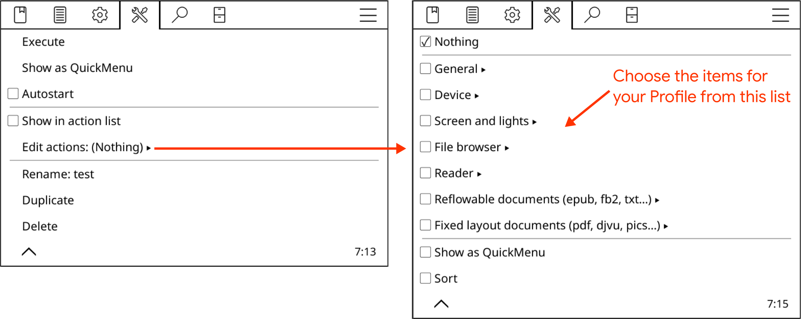

你当前阅读的是 简体中文版的 KOReader用户指南。该指南由志愿者译为多种语言。由你所见，下方的翻译进度总览显示了各语种的翻译进展。出于实用性考虑，表中仅展示翻译进度 超过50%的语种版本链接。
若要查看全部语种的翻译进度并为本指南的翻译做贡献，请访问本项目的 Weblate众包翻译页。
本用户指南的翻译进度总览

本指南主要为彩色屏幕设计。如果你是初次阅读，强烈建议使用电脑、平板或手机浏览，因为本指南会使用不同颜色来标注KOReader软件界面的不同部分，色彩会使各类说明更易理解。当然，你仍可在电子墨水屏上阅读本指南，只是这些未对e-ink优化的内容可能体验不佳。
你可以使用浏览器自带的页内搜索功能（快捷键一般是同时按下Ctrl和F）来检索特定话题和关键词。如果你有关于本指南的建议或疑问，请前往GitHub工单页提交。
本指南的不同文段依照其分类标注了不同颜色：
KOReader界面（以蓝色标示） |
状态栏、书籍地图等功能…… |
菜单路径（以绿色标示） |
顶部菜单 /  / 标注样式 / 标注样式 |
外部软件（以紫色标示） |
Calibre、Readwise、KoHighlights等。 |
本指南还穿插有不同样式的注释栏，以展示说明或警示信息：
KOReader由来自全世界的志愿者开发并提供技术支持。你也可以参与到本项目中来：
- 修正故障及加入新功能
- 将软件界面译为其它语种，或改善现有的翻译细节
- 以你的经验帮助论坛上和GitHub工单区的其他用户
请查阅联系我们区域寻找对应链接。
本指南最后更新于2025年3月25日
尽管有着极简界面，但 KOReader 是一款十分强大且可高度定制化的软件。本章节可作为操作指南的导航页，是最适合新用户的上手起点。你将从本章节了解KOReader具有的功能及如何使用它们，请点击功能项后的链接按钮 跳转到对应章节。
- U盘读写模式（须阅读设备支持该功能）
- 用配套账号登录云存储 (Dropbox/FTP/Webdav)上传下载
- KOReader可作为SSH服务器，使用SFTP软件或文件管理器传输文档
- 借助 Calibre 插件，可通过 WIFI 直接从 Calibre 图书馆将书籍发送到 KOReader
- 借助新闻下载器插件，将RSS及Atom订阅源提供的文章条目以HTML格式下载至阅读设备
- 通过Wallabag插件从Wallabag账号中拉取文章（一款自托管的类似Pocket的开源稍后阅读服务）
- 更换字体（包括用户自有的字体），调整字号、对比度、亮度、字间距、字偶间距、词间距、文本对齐方式、行间距、分栏版式、页边距等等
- 使用功能强大的内置样式微调工具或自行编写样式，实现对书籍渲染样式的精确控制
- 为夜间模式 手动或自动反转屏幕颜色
- 自动调整你的前光色温
- 跳读工具 可在页面、章节和书签之间快速跳转
- 借助独特的书籍地图功能，鸟瞰书籍全貌和自己的笔记与标注
- 借助书页速览视图，像检阅胶卷一样快速略览页面
- 书签浏览器让浏览标注与笔记易如反掌
- 如果不满意书籍自带目录，可自动或手工创建副目录替代之
- 隐藏或排除如附录、索引和备注等小节，实现更精准的内文页码计数
- 拥有两百多种操作的强大手势交互系统，只需点按或滑动即可操作KOReader于股掌中
- 支持实体键盘（无论阅读设备集成还是通过有线或蓝牙连接的外设），可将键盘快捷键与特定操作绑定
- 或将常用操作编入快捷菜单，通过点按或滑动快速触发
- 编写配置文档实现对KOReader的全方位掌控及各类自动化操作
- 通过选中文本或手动输入来检索书籍（支持正则表达式）
- 在书签、标注及笔记中检索
- 长按文本快速翻译，或查阅维基百科及已安装的词典
- 一键将整页内容译为多达130种语言
- 借助强大的插件系统，用户甚至可以与ChatGPT讨论书本内容（须安装特定插件）
- KOReader可自动更新
- 在设定的时间间隔后调暗或关闭屏幕亮度
- 为不同的阅读场景设置独立的页面刷新频率
- 用随机图片、书籍封面、阅读进度等多种选择设置待机画面。
- 设置电量充电提醒，避免电池过充或过放
- 设置内存用量提醒或在到达限制时选择性重启KOReader程序（这对于内存较小的设备十分有用）
- 自动或手动裁剪页边空白
- 对文档进行页面重排以便在小尺寸屏幕上更方便地阅读及提取文段
- 对不包含文本层的PDF文档（如旧书扫描版）进行OCR
- 多种页面缩放方式及换页方向，让阅读科学文献等文本分栏的文档更容易
- 自动校正文档倾斜（比如旧书扫描版）
- 将标注内容导出为PDF文件，以便在KOReader以外的环境中浏览
- 针对漫画阅读的分格缩放功能
- 可调整的页面刷新参数，实现残影与翻页速度的完美平衡
- 为书籍添加您自己的 CSS 样式调整
- 用户补丁系统允许用户改变KOReader的核心行为
- 在剪贴板中生成二维码以向其它设备分享文本和链接
- 查看epub文档的HTML源代码
- 在阅读设备上创建及编辑文本文件
- 打开终端模拟器并在阅读设备上执行命令行
- 查看CPU、内存和电池的使用数据
KOReader支持PDF, EPUB, DJVU, MOBI, CBZ, CBT, DOCX, RTF, HTML, TXT, XPS, FB2, PDB, CHM and MD格式，还可打开ZIP压缩档并显示图像文件。
有许多方法可以将书籍传输到阅读设备。请注意，KOReader可能需要重启（如果是在Pocketbook/Android上则是刷新目录）以完成对新传输文件的索引。
根据设备型号不同，KOReader还支持通过阅读设备内置的导入方式传输文件：
- KOReader内置的U盘存储模式：KOBO及部分CERVANTES型号支持该功能。
- 云存储（Dropbox/FTP/Webdav）：使用该功能前，须通过下方展示的菜单项登录云服务账号。详细操作步骤可在添加账号时点击菜单中的说明按钮查看：
（文件浏览器中的）顶部菜单 /
 / 云存储
/ 云存储 - SSH/SFTP访问：KOReader可作为SSH服务器，以便使用电脑传输文档（该功能支持Kobo、Kindle、Cervantes的阅读器）请使用SFTP软件（如Filezilla）或文件管理器（部分操作系统内置）请查阅wiki页了解具体操作流程；另请注意下方的警告注释栏内容。
- Calibre传输：借助Calibre插件，可通过 WIFI直接从 Calibre 图书馆将书籍发送到 KOReader 中。请查阅WIKI页面了解操作方法。
- 新闻下载器：该插件可以HTML格式下载RSS及Atom订阅源提供的文章。请查阅wiki页了解操作方法。
- Wallabag：此插件可以从Wallabag中拉取文章，这是一款自托管的类Pocket稍后阅读软件。请查阅wiki页了解更多信息。
警告 在不设置密码的情况下使用SSH功能应当额外谨慎，因为这将使阅读设备可被公开访问。不过如果只是临时开启设备wifi、且接入的是家庭wifi网络，这一风险是可以忽略的。
可以从下列途径打开导入的书籍：
- 文件管理器 ——可点击文件管理器用法查看详细操作方式
- 收藏夹——由用户选定书目组成的列表，可在文件管理器中长按书籍添加
- 阅读历史——曾经打开过的书目
- 自定义书单——由用户自行创建的书籍清单。请点击自定义书单详细了解
若要改变书目陈列方式，请按照如下路径操作：
 / 书籍陈列方式
/ 书籍陈列方式若要改变书目陈列密度，请按照如下路径操作：
/ 设置 / 陈列参数设置每个对话框可指定专属呼出手势。例如，在阅读过程中可使用手势交互唤出阅读历史或者收藏夹窗口来打开另一本书，无需打开文件浏览器。
在阅读历史界面点击左上角的汉堡状菜单键，可以按照文件名或书籍元数据检索书籍。
还可将收藏夹或者阅读历史窗口设置为KOReader首屏，代替默认的文件管理器。请按如下路径操作：
/ 启动后首屏显示
下方的图像展示了KOReader的默认点按区域功能划分；请点击屏幕上的对应区域呼出顶部菜单或者底部菜单。顶部菜单也可通过从屏幕上端下滑来呼出。在非触摸屏阅读设备上（如Kindle 4），底部菜单可通过按动确认键呼出。
若要在点击顶部菜单区域时同时呼出顶部菜单及底部菜单，请按照下方所示菜单项设置：
 / 点按与手势交互 / 呼出菜单
/ 点按与手势交互 / 呼出菜单
四角触控区可用于多种手势交互，如点按、双击、双指点按以及长按。
另外，前一页和后一页触控区还支持双击交互。
在状态栏触控区点按时，如果设置状态栏仅展示一项图示，则将循环切换各图示；如果设置展示多项图示，则点按将使状态栏显示或隐藏。
- 替换字体*:顶部菜单 / / 字体
- 放大文字底部菜单 /

- 加粗文字底部菜单 /

- 反转屏幕颜色（显示为黑底白字）顶部菜单 / / 夜间模式
通过底部菜单中的其它格式选项可对文字样式进行精细调整。以上说明仅仅是部分快速上手指南。详细说明请点击自定义文本样式跳转至对应章节阅读
此菜单可控制屏幕灯光。若设备配备有暖光灯（普通白色 LED 灯混合橙色 LED 灯而成），可在此处分别控制两种灯光。若要指定呼出本对话框的交互手势，请按如下路径操作：
/ 屏幕前光若要将书籍封面或自定义图片设置为待机屏显，请按如下路径操作：
/ 屏幕相关 / 待机屏显JPG和PNG图片可用作待机屏显（为取得更好的显示效果，建议将图片转换为包含色彩抖动的灰阶图像）。将图片文件导入阅读设备的任意文件夹，然后将该文件夹指定为待机屏显图片来源。请按照下方路径操作：
/ 屏幕相关 / 待机屏显 / 设置屏显更多关于转换图片以用作待机屏显的专业信息，请参阅这则Mobileread论坛主题帖。
此处仅展示键盘基本用法；若要查看键盘快捷键相关信息，请点击此处前往对应章节。
- 点按输入框以外的区域关闭键盘；点按输入框再次呼出键盘
- 对字母按键上划输入对应大写字母（如已按下shift键则为输入对应小写字母）
- 若要改变键盘样式，请按照下下方路径操作：
顶部菜单 / / 设备相关/ 键盘 / 键盘设置
- KOReader提供多种键盘布局：
顶部菜单 / / 设备相关 / 键盘 / 键盘布局
- 点击键盘上的
 图标即可切换键盘布局
图标即可切换键盘布局
长按键盘按键可输入特殊字符；常用特殊字符如下图所示。长按某个数字键（图上的灰色框）以键入其周围的字符：

除了长按键盘按键弹出的特殊字符窗口外，还可通过在按键上滑动输入特殊字符。如下方图示，在字母a按键向其它方向滑动，可输入对应字符（如上划输入大写字母A）。请注意图中的完整特殊字符窗口仅供演示，在滑动时不必等待窗口弹出即可完成输入。熟悉特殊字符的位置排布之后，滑动输入会让打字非常迅速。

若该功能影响正常键入，可通过取消下列选项来禁用：
/ 设备相关 / 键盘 / 划动输入特殊字符另外，快捷键可以让字符修改更加便捷。长按下列按键以执行对应操作：
- 左方向键 - 将光标移至行首
- 右方向键 - 将光标移至行末
回退键在划动手势下可执行不同操作：
- 点按：删除前一个字符
- 长按：删除整行
- 左划：删除光标左侧的单词
- 上划：删除光标所在的整个单词
详细信息请查阅对应维基页。
KOReader亦包含用于输入繁体及简体中文的笔画输入法。请查阅维基页了解更多信息。
该插件适用于支持自然光（黄色光/橘色光）的设备，用于按照时间表自动调整屏幕前光色温及开启夜间模式（屏幕颜色反转为黑底白字）。该功能既可同时设置两者，又可单独开启色温控制或夜间模式以便手动调整另一项。
本插件随KOReader安装过程默认启用。若其未列于菜单中，可通过下列路径启用：
/ 更多工具 / 自动开启暖光及夜间模式屏幕前光色温自动调整功能提供两种切换模式：
固定时间表：按照用户输入的时间点切换屏幕前光色温。该模式的切换点是固定的，全年保持不变、无视白昼长度的季节变化。
太阳方位：根据用户输入的经纬及海拔信息计算所在地太阳方位，并依照太阳起落数据调整屏幕前光色温。该模式的切换点是动态变化的，随一年四季白昼长短变化而调整。
在使用该模式前，请先浏览下图熟悉插件内的专业术语：

- 按照下列路径找到插件菜单： 顶部菜单 / / 屏幕相关 / 自动切换暖光及夜间模式
- 单击激活菜单项，然后单击按固定计划
- 回到上级菜单，点按固定时间表设置
- 调整各菜单项以设置色温切换时间表。菜单中的专业词汇含义请参阅上方图片。
- 按照下列路径找到插件菜单：
顶部菜单 / / 屏幕相关 / 自动切换暖光及夜间模式
- 点按启用，然后点按根据太阳方位切换
- 返回上级菜单，点按坐标设置。设置当前经纬（必填）及海拔（选填），并为该坐标起个标题。
- 返回上级菜单，点按色温及夜间模式设置
- 调整各菜单项以设置色温切换时间表。菜单中的专业词汇含义请参阅上方图片。
通过当前生效的计划选项，可查看设备正在使用的时间表。

在为不同的时段设置暖光百分比时，您还可以将该时段设置为夜间模式，这会在该时段开始时反转屏幕颜色。如果您的最小前照灯仍然太亮，或者如果您喜欢深色页面背景，则可以激活此功能。要启用此功能，请在下面的对话框中，单击夜间模式复选框，然后单击设置。
设置后该时段旁将出现月亮图标。停用则只需取消勾选对应时段的夜间模式选择框。

该功能会自动根据当前生效的计划在日落时打开屏幕前光、在日出时关闭。用户也可忽略当前计划，手动开启或关闭屏幕前光；自动调整色温功能仍会在设置的下个时间段自动启动。勾选白天时关闭屏幕前光选项即可启用该功能。
若希望屏幕前光色温调节以快速切换而非平滑渐变方式执行，请按下列路径操作：
- 参照前文说明将模式改为固定时间表
- 并调整下图所示的选项：

按上图所示时间表，色温昼夜切换将在一分钟内完成。这意味着屏幕前光色温将在一分钟内从0调节到100（或反过来）。该用时可单独设置以拉长切换过程。
KOReader 采用简洁的以黑白为主的用户界面，这是因为渐变色和不同深浅的灰色会导致电子墨水屏出现闪屏和残影现象，从而影响阅读体验。
KOReader有两套核心界面：阅读界面及文件管理器。接下来将先介绍阅读界面；文件管理器请前往本指南对应章节了解。
阅读界面有两套菜单：
- 顶部菜单包含与KOReader使用相关的大部分常见选项。在其中可翻查书目、调整KOreader功能、配置插件等。
- 底部菜单则整合与书籍排版相关的选项，如字重、字号、行间距等。调整文本样式将主要在底部菜单中操作。


上图展示了可能出现在阅读界面上的各类标志：
- 指示标志：这些标志说明某些状态及当前进程，将在特定阶段出现在屏幕左上角。实际显示中这类标志的尺寸会更小，此处仅放大以供识别。接下来的一节详细介绍了各标志对应的功能：指示标志
- 状态栏：该区域显示诸多与当前阅读书籍及KOreader相关的信息，可灵活自定义。请前往状态栏章节了解详情
- 副状态栏：除了界面底部的默认状态栏，屏幕顶部还提供副状态栏可自行启用。请前往状态栏章节了解详情
- 页码参考：如果书籍出版方提供了纸版书的页码，它们将在此处显示。请前往页数计数及页码参考章节了解详情
- 标注样式：KOreader提供如图所示的多种标注样式。若阅读设备配有彩色屏幕，用户还可使用彩色标注。点击书签、标注和笔记章节了解详情
- 旁注标志：该标志出现在添加了旁注笔记的标注旁。KOReader提供多种样式的旁注标志。前往书签、标注和笔记章节了解详情
KOReader使用如上图所示的标志指示某些状态或当前进程，它们会在特定阶段出现在屏幕左上角。
  
|
分段渲染标志 这组标志指示了分段渲染进程，会比其它标志更常出现。当用户调整了底部菜单中的选项，这组标志就会显示。 该功能通过仅渲染当前章节（而非整本书）以便用户快速预览样式调整效果。得益于此功能，屏幕旋转也会更快生效。该功能默认启用；若要为当前书籍或全部书目禁用该功能，可点按或长按下列菜单项： 顶部菜单 /
/ 文档相关 / 启用分段渲染在确认设置变更后，整本书需要重新渲染，因此这是一项分多阶段的过程。下方罗列了各标志对应的渲染阶段： |
|
在此阶段，文档仅有局部渲染。页码计数、脚注等受影响数据是不准确的。用户可快速预览设置后的文本样式并进一步调整。在此阶段用户仍可翻页及使用注释链接跳转阅读位置。 |
|
此标志代表 后台正在执行全书完整渲染。此时用户仍可翻页、使用注释链接跳转页面位置及调整设置。 |
|
此标志代表已完成全书完整渲染但尚未生效，因为KOReader正等待用户空闲（未操作设备）以重新加载书籍的剩余部分。此时用户仍可翻页、使用注释链接跳转页面位置及调整设置。 |
用户已空闲一段时间，KOReader正重新加载整本书。在此阶段，KOReader会屏蔽一切交互避免干预。 |
 |
标注模式图标 进入选择并标注模式时，该图标将会显示。KOReader拥有独立的标注模式，以实现跨多页的标注。请前往书签、标注和笔记一节了解详情。当开始标注操作后，该图标将显示于屏幕左上角，提醒用户当前仍处于标注模式下。当用户选择到文段末尾自动结束标注操作时或用户取消标注（通过再次点击标注的开头或该标注图标）时，该图标就会消失。。 |
 |
宝可梦球图标 当在某个单词上长按（有意或无意）时，该标志将会显示。KOReader提供包含常用选项的长按菜单，以及在持续长按超过三秒时的拓展菜单。该标志代表用户触发了这款拓展菜单。 |
 |
翻页模式标志 在出于下列状态时，点击屏幕左上角将出现该标志：
在当前图标下，屏幕将暂时显示未经裁切和放大的完整页面，此时用户仍可翻页。再次点击该标志将退出这种显示模式。 |
epub、mobi、html等文件格式属于可重排版文件，因此不存在固定的页码。这些文档的页码会随屏幕尺寸、显示方向等因素动态变化（而诸如PDF或djvu的文件格式则拥有固定的版面尺寸，因此页码也是确定的）。
可重排版文档的文本字号被调大时，页码总数也会随之增加，因为每一页上能够显示的文字变少了。某些情况下这种变化会造成影响，比如第38页上的标注文段可能在字体调整后跑到了 第42页上。
KOReader支持页码参考功能，出版方可利用该功能将纸版书的页码写入电子版书籍中。启用该功能后，KOReader不会自行计算书籍页码，而是展示由出版方提供的内置页码。这使得状态栏中显示的页码可以与纸质版保持一致。
页码参考的用处：
- 因为与纸版书保持一致，页码参考能够在引用时提供精确页码。
- 页码参考有助于定位指定页面，对熟悉纸版书的读者尤其有用。这使得用户可以更便捷地在数字版作品中找到特定文段或引言。
- 数字版书籍可在各类设备及平台上阅读，由于显示设置和字号选择等因素各有不同，显示的页码可能天差地别。当同时在电子墨水屏阅读器和手机等不同设备上阅读同一本书，页码参考可作为一致性参照点。
若要启用该功能，请按照下列路径操作：
 / 页面参考 / 使用页码参考
/ 页面参考 / 使用页码参考如果同时勾选了该菜单中的在页边空白处显示页面参照标记选项，页码参照将以小号字体显示在文段旁。
请注意，仅当书籍内嵌有页码参照时，该菜单才会显示。
KOReader有两块状态栏，一条是默认启用的底部状态栏；另一条是副状态栏，启用后将出现在页面顶部。副状态栏仅对epub、html、docx、rtf、txt等可重排版的文件格式可用。
底部状态栏是新加的，正在持续维护中。副状态栏来自KOReader早期版本遗留，因此不会再有功能扩展。如有需要，可通过下列路径启用副状态栏：
/ 副状态栏副状态栏可通过如下菜单进行配置：
/ 状态栏 / 副状态栏本节接下来的说明将围绕底部状态栏。
此菜单可用于配置底部状态栏。请自行探索设置子菜单，打造自己喜欢的状态栏。
/ 状态栏状态栏上可显示多项标志，但默认仅显示一项；点击状态栏可循环显示不同标志。若要同时显示多项标志，请按照下列路径操作：
/ 状态栏 / 配置显示标志 / 显示所有勾选的标志启用该选项后，状态栏无法通过点按隐藏。此时若要隐藏状态栏，需要指定一种手势交互来操作：
为状态栏显示的标志排序：
/ 状态栏 / 配置显示的标志 / 调整标志排布自定义文本是一项特殊的状态栏标志。该项可用于在状态栏中显示选定文本。可利用该项在状态栏标志间插入空白间隔，如下图所示：

- 首先，在下列菜单中短按该选项启用功能
顶部菜单 / / 状态栏 / 自定义文本：「KOReader」
- 接着，长按该选项打开设置菜单。在第一个输入框中输入空格，然后再第二个输入框中输入重复次数来调整所需的分割宽度。
也可选择其它字符作为分隔符。该项和其它状态栏标志项一样可调整次序实现分组。
状态栏中的阅读进度条默认显示全书进度。但也可设置为显示当前章节进度。该功能适合诸如划分诸多短章节的书籍，此时章节状态栏可能更有用。请通过下列路径启用该功能：
/ 状态栏 / 阅读进度条 / 改为显示章节进度也可通过指定一种手势交互，在全书进度条和章节进度条间切换。该选项位于：
此处仅大致介绍顶部菜单中的选项以便上手。详细信息请查阅后文的相关章节。

- 定位：本页菜单包含用于在当前阅读书籍中定位文段的选项，如目录、书签、书籍地图等
- 版面设置：此页菜单包含用于调整书籍版式的选项，如字体设置、样式微调等
- 设置：此页菜单包含与KOReader及当前设备相关的选项，如显示效果、屏幕前光、手势交互等
- 工具：此页菜单包含用于拓展KOReader功能的各类插件。
 搜索：此页菜单包含与搜索和查询相关的功能，如文本搜索，词典，翻译，维基百科等
搜索：此页菜单包含与搜索和查询相关的功能，如文本搜索，词典，翻译，维基百科等- 文件管理器：此按钮用于打开文件管理器，这里是管理藏书库的界面。
 主菜单：此页菜单包含查找书籍的工具，如阅读历史、收藏夹、自定义书单等。书籍信息、更新KOReader及退出KOReader选项也在此页中。
主菜单：此页菜单包含查找书籍的工具，如阅读历史、收藏夹、自定义书单等。书籍信息、更新KOReader及退出KOReader选项也在此页中。

阅读模式：切换到页面连续模式，可以像浏览网页一样滑动阅读书籍。该模式更适合配备非电子墨水屏（LCD、OLED）的阅读设备。在页面连续下，页面的顶部和底部页边空白将被裁切，因此首行和末行文本可能会被裁掉。启用页面重叠可以避免这一问题：
/ 页面重叠渲染模式：该选项决定KOReader如何呈现页面。默认设置为WEB且通常无需改变。当某本书籍（或缓存的网页）使用了复杂排版（指定了页面宽度或页边距，使用了负边距或浮动元素等），版式出现错乱或内容溢出屏幕时可尝试其它渲染模式。
DPI缩放：该选项可视为文档全局缩放比例（不会影响字号）。在默认设置96 dpi下，书籍中的图像将以原始尺寸呈现。简单来说该选项可以在放大图片的同时保持文字大小不变。

词间距与字间距 两项设定是彼此关联的，它们共同决定文字在两端对齐下的样式。文本两端对齐时单词之间的间距会被拉大，以便每行文字的左右边缘都能与页面边缘对齐。由于每行中的字数不是相同的，两端对齐会使用挤压或拉伸文字来填充满一行。
词间距：为容纳更多文字，一行文字中的空白允许被压缩的程度。该选项不会影响单词，只会改变单词间的间隔。
字间距：当一行文字中有太多空白时，将这些空白分拆到字母之间而使单词被拉伸的程度。 该选项将影响单词的样式。若不希望单词被拉伸，请将该选项设置为无。
请自行探索各种选项组合，让文本呈现自己喜欢的样式，然后在各选项对框中将所选设置保存为默认值。

对比度和字重影响文字笔画浓淡。这两个选项都可以让文本呈现某种样式，但它们的技术原理不同。当然，这两项可以同时生效。
两个选项间的区别可以这样概括：
+ 不改变字体宽度，不影响书籍总页数
+ 无需对书籍进行重渲染，调整速度快
- 在LCD或低DPI屏幕上可能影响观感
+ 如果已安装，将使用适当字重的字体
+ 在LCD和低DPI屏幕上观感更佳
- 需要重新渲染字体，调整速度慢
字体微调是根据设备屏幕像素阵列调整文字以实现最佳可读性的功能。原生选项将使用字体内置的微调规则；自动选项使用FreeType的微调算法。自行安装的字体文件包含的微调规则可能有问题，因此自动是更稳妥的选择。另外，自动选项在处理CJK字符（东亚文字）时表现更好。请自行探索当前设备适合的选项。
字偶间距是调节特定字母组合之间的间距以提升视觉效果的功能。默认的最佳选项可能会拖慢书籍打开速度（受阅读设备性能影响），但对对合字（如下图所示）、连笔阿拉伯字形及某些书体的支持更好。若阅读设备性能较差可将改为良选项，在保证拉丁字母书体正确显示的前提下提升设备响应速度。


副状态栏是对EPUB、HTML、DOCX、RTF、TXT等可重排版格式的文档启用一块补充状态栏。启用该功能后，可通过下列路径详细配置副状态栏：
/ 状态栏 / 副状态栏内嵌样式及内嵌字体决定KOReader是否使用出版方在书籍中内置的排版样式和字体来渲染页面。这些选项通常是开关形式，可通过下列路径更精细地调整页面表现：
/ 样式微调图像缩放决定书籍中的插图如何呈现。最佳选项可获得更好的观感，但会拖慢阅读设备。
根据打开的文件格式不同，KOReader的用户界面及设置选项可能会有所差异。KOReader支持的文件格式大致可分为两类：
- 固定版面文档 PDF、djvu、图像文件等
- 支持重排版的文档 epub、html、docx、rtf、txt等。
KOReader包含众多功能，因此拥有复杂的菜单系统，可使用菜单检索功能快速寻找特定设置项。若用户对某项设置的名称有印象却不知道如何找到它，可借助该功能检索：
/ 帮助 / 菜单检索此外，可为该功能指定唤出手势，或将其添加到快捷菜单以方便使用。
点击底部菜单中的选项标题可以查看其功能介绍。 |
|
用户界面的语言可通过下列路径更改： 顶部菜单 /
/ 界面语言 |
|
如果你想改变用户界面的大小，有一个DPI设置： 顶部菜单 /
/ 屏幕 / 屏幕 DPI您可以从菜单中选择一个值，或选择自定义 DPI 后输入一个值进行微调：更高的 DPI = 更大的界面。请注意，底部栏中还有一个缩放（DPI）设置。该设置仅与文档相关。您可以在下一节中找到相关说明。 |
长按某一选项或菜单项（如字重、行间距等）可将其当前设置指定为默认选项，仅对之后开启的书籍生效。之前打开的书籍将保持原设置。菜单中的默认项会带有星号（★）或黑色边框作为识别标志，如下图所示： 

|
可使用下划手势对阅读历史、目录、阅读统计等全屏对话框执行关闭操作。(书签管理器是个例外，但可以通过指定其它多指手势来关闭) |
有两种手势可以用来进行屏幕截图，一种是沿对角线长划，另外一种是用双指同时点击任意一对屏幕对角。第二种手势可以用于在浏览图像时截图。如果阅读设备配有实体键盘，还可以按下Alt+Shift+G组合键来截图。 |
如果你想随机打开一本书的某一页，我们提供了一个跳转到随机页的操作，你可以将其分配给任何手势。该操作位于阅读器的手势管理器的类别中。 |

在包含如上图所示的调整箭头按钮的对话框中，您可以点击并按住箭头按钮，以更大的幅度更改值。 您可以通过点击此类对话框（非全屏）窗口之外的位置来关闭它。 你可以通过按住其窗口标题并拖动来移动此类对话框。 您可以通过点击并按住窗口标题（当您想在调整值的同时查看其下方的文本时），使此类对话框半透明。 |
创建新文件夹 - 在需要选择位置（云存储、移动到存档插件、导出插件）时，KOReader 会显示一个类似我们的文件浏览器的界面。如果您想在选择时创建新文件夹：
|
KOReader 支持在 EPUB 和扫描的 PDF/DJVU 文档中进行词典查询。要查看词典定义或翻译，只需点击并长按一个单词即可。 在单词上长按，弹出对话框可查找该词在当前书籍中的其它出现位置，或者查询维基百科。 |
如果你想查看当前日期，可以点击顶部菜单中的时钟图标。 |
KOReader有三种触摸滚动方式。您可以通过以下方式进入：
/ 触控与手势 / 滚动- 经典滚动：此模式的工作原理与您的手机/平板电脑滚动完全相同。
- 加速滚动：此模式允许您比经典滚动更快地滚动。您还可以在不抬起手指的情况下滚动多页。滚动量与开始滚动后移动手指的距离成正比。
- 松手时滚动页面：这种页面滚动方式更适合电子墨水屏设备。与其他页面滚动方式不同，该方式不会在滚动时持续刷新页面。它的工作原理与经典滚动类似，但不会显示中间过程，用手指滑动，松手时页面会直接跳到对应位置。该模式对包含插图或图表的书籍尤其有用，便于改变页面位置及调整视图以完整查看这类元素。
这个有用的功能类似于浏览器中的后退按钮。当您使用Skim小部件、书签列表、图书地图等跳转到图书的其他部分时。KOReader会记住您之前的位置。例如，如果您遵循内部链接或参考，这很有用。只需轻轻一点，你就可以回到你原来的地方。您可以从以下位置访问此功能：
在该菜单中还可前转页面。该功能默认被指定给多指划动手势，用户可另行指定给另外的手势（如点击屏幕一角），或将该功能列入快捷菜单.
KOReader通常会对包含图像的页面进行完全刷新（您可以看到黑色闪烁）。原因是去除上一页的残留和重影。但根据您的设备和个人喜好，这可能不是必需的。您可以在此处禁用此自动刷新行为：
/ 屏幕 / 电子墨水设置 / 全刷频率 / 始终刷新图像如果用户界面出现黑色闪烁，您也可以从这里禁用：
/ 屏幕相关 / 电子墨水屏设置在 KOReader 中浏览文档有不同的方法，各有优缺点。您可以使用：
- 跳读工具
- 书籍地图
- 书页速览视图
跳读工具是非常有用的定位工具，可用来：
- 通过直接点按阅读进度条上的位置，或输入页码跳至指定页面
- 章节导航
- 书签导航
呼出跳读工具的方法：
- 长按屏幕底部的状态栏区域
- 从这个菜单： 顶部菜单 / / 跳读全书
- 您可以为其指定一个手势
- 您可以将其添加到快速菜单中
先来快速浏览下方的图表。可以看到跳读工具有两种样式。这两种有相同的功能，区别仅是尺寸不同：
- 全尺寸跳读工具：这是安装KOReader后默认启用的跳读工具。它的尺寸比精简跳读工具更大，因此上面的各种按钮更易点按。该工具会显示在屏幕中间显示。
- 精简跳读工具： 这是默认跳读工具的精简版本。它的尺寸更小巧，会显示在屏幕顶部或底部，因此不像默认工具那样遮挡屏幕，在诸如标注文段时会更便于使用。
若要使用精简跳读工具，可点选如下菜单中的顶部或底部选项：
/ 书页定位 / 跳读工具位置：提示 两种跳读工具都可调整显示位置。长按工具栏的空白区域然后拖拽即可移动。另外，长按也可让对话框进入半透明状态（仅在对话框处于初始位置时有效）。在移动位置后，再次长按对话框可以将其复位。
接下来回到图表。图示的部分按钮有使用蓝色和橙色两种颜色的两种描述，这些按钮在点按或长按时功能不同。点按将执行蓝色功能，长按将执行橙色功能。

图中编号项的功能说明（粗体代表长按时的功能）：
- 转到上一章开头/转到本书扉页
- 转到上一处书签/转到本书第一处书签
- 在当前页添加书签/打开书签对话框
- 转到下一处书签/转到本书最后一处书签
- 转到下一章开头/跳到本书尾页
- 按所示数字间隔回退（－）或快进（＋）页码
- 该数字为当前页码。点按将打开对话框以输入指定页码或百分比跳转。长按时则将回到最初开启跳读工具时的页码。该功能对于诸如想快速浏览书籍其它章节然后回到当前位置等情况非常有用。
- 这是阅读进度条。细线是显示每章节起始处的章节标记。点按阅读进度条任意位置将转到对应页码。游标是阅读起始点，用于显示本次阅读开始时的页码。游标位置将随书籍切换而重置。
- 此按钮仅出现在紧凑型跳读工具中，功能与长按编号7相同，使页面会到打开跳读工具时所处页码。该功能对于诸如想快速浏览书籍其它章节然后回到当前位置等情况非常有用。
提示 若要随机跳到某一页，KOReader提供跳到随机页码的操作项，你可以为该操作指定一个交互手势。该选项位于 手势管理中的阅读器类目下。
书籍断章点可以显示在跳读工具或者阅读进度条上。

如果你的文档有太多的标题级别，你的章节标记可能会像上面的例子一样显得拥挤。您可以通过以下方式更改可见目录标记级别的深度：
/ 设置 / 阅读进度条
您还可以将此简化的目录用于：
- 章节标题（如果显示在状态栏上）
- 章节导航
- 剩余阅读时间估算
这些选项位于同一菜单中。
如果您的文档没有目录，您可以启用替代目录。启用此设置后，KOReader 将根据文档标题（如果可用）或EPUB中的单个HTML文件构建目录。长按此菜单项可获取更多信息：
/ 设置 / 副目录您可以在本指南的相关部分找到 KOReader 中可用的目录工具的更多信息：目录工具
书籍地图是KOReader的一个强大而独特的功能，对于了解一本书非常有用。例如，如果你通过跳过某些部分稍后阅读来非线性地阅读一本书，那么很难跟踪你的进度。书籍地图可以一目了然地显示你已经读过这本书的哪些部分。
此外，您还可以：
- 查看您在每个页面上花费了多少时间（如果启用了阅读统计插件）
- 检查哪些页面有书签、标注和笔记
- 与跳读工具功能类似，可直接定位到书籍的任意文段
您可以通过菜单访问书籍地图，也可以指定手势以更快地访问：
/ 书籍地图当您在阅读一本书时第一次打开书籍地图时，它将处于网格视图模式，将所有章节都放在一个屏幕上，以提供图书内容的最佳初始概述。要获取有关使用情况的详细信息，请点击左上角的信息图标。您可以通过点击右上角的X或使用任何多滑动手势（向上、向左等）关闭书籍地图。

- 章节边界
- 黑色条表示已读页面。高亮的条意味着在页面上花费的时间更多。
- 书签图标显示书签页面的名称。
- 块状条纹标志说明该页包含标注。
- 铅笔图标显示带有笔记的页面。
- 若使用了跳页功能，带圆圈的数字将指示之前所在的阅读位置。在阅读界面使用返回上一位置时，将按照数字标记的顺序逐一回到该位置。
- 三角形显示您当前的页面。
- 垂直滚动条显示您当前的视图级别。
- 垂直滚动条显示您当前的页面宽度级别。
您可以通过更改以下选项自定义图书地图：
- 首先，尝试沿屏幕底部边缘向左滑动和向右滑动，以更改指示页面的列的宽度，并观察它如何更改地图的比例。
- 然后，尝试沿屏幕左边缘向上和向下滑动，以更改章节标题深度并切换到平面视图。请参阅下面的示例。
除了上面默认的网格视图外，您还可以在左侧看到平面视图，在右侧看到没有章节标题的网格视图。请注意视图之间左垂直滚动条的变化。如果你想切换回默认视图，你可以长按左上角的信息图标。


当您点击图书地图屏幕上的菜单图标时，您会看到上面的菜单。菜单选项解释如下：
- 关于书籍地图：书籍地图使用和图标描述的简短说明。
- 可用手势：您可以使用手势更改书籍地图的设置，而不是使用此菜单。
- 即点即看的书页速览：勾选此选项后，点按书籍地图中的某一页将进入书页速览视图，展示所点选区域的页码。取消勾选，点按则会直接前往对应页。请注意，受屏幕尺寸、触控灵敏度、点按精准性等因素，打开的可能是目标页面的临近页面。
- 切换当前/初始视图：如果您自定义了图书地图视图，点击此按钮可在默认视图和自定义视图之间切换。
- 切换网格/平面视图：在单独的章节或连续的章节视图之间切换。
- 章节级别：更改章节/子章节级别的深度。
- 页面槽宽度：使每个页面槽更宽或更窄。
- 十页标记：该选项共有三档，第一档将在页码格上每隔十页在第十页添加竖线标记；第二档将会加长标记使其更明显；第三档将每隔五页在第五页上添加次级标记。
书页速览视图以网格形式展示书页缩略图，可用于像浏览相册一样快速定位页面。书页速览视图可通过点按书籍地图或从菜单中进入。还可通过指定手势交互来快速呼出。
/ 书页速览视图
下方展示了书页速览视图的用法。也可通过点按界面左上角的汉堡状菜单键查看功能介绍。长按该按键还可显示或隐藏底部定位栏中的章节标题。
- 在顶部边缘左划或右划可增加或减少书页缩略图的列数。
- 在左侧边缘上划或下划可增加或减少书页缩略图行数。
- 在中间区域划动可移动显示的缩略图。上划或下划将卷动一行（在图示中对应2块缩略图），左划或右划可翻过整屏（在图示中对应4块缩略图）。
- 点击缩略图可在阅读视图中阅读该页。
- 点击底部刻度条区域的任意位置以该页为中心显示缩略图。在底部左划或右划将跳过一整块刻度条对应的页数。
- 底部区域的图标与图书地图中使用的图标相同，并在该节中进行了解释。
通过汉堡状菜单键还可为书籍地图和书页速览视图套用不同底纹的备选主题。该主题对章节标题交替上色，使章节边界在书籍地图和书页速览视图中更易识别。但该主题使用的灰色会触发e-ink全屏刷新，可能会干扰阅读。请自行尝试是否需要启用。
有些书籍文档不包含目录（ToC）。根据对书籍预处理的不同，可能会遇到下列目录相关问题：
- 书籍缺少目录，因此无法跳读章节或查看剩余阅读用时
- 书籍包含的目录用处不大，因为目录中的章节标题存在错误或缺失
KOReader的一些功能可以在阅读这类目录有问题的书籍时提供帮助。
请注意副目录无法应用于PDF、DJVU等固定版面文档，因为创建副目录功能依赖于文档的HTML标签。自定义目录及划定隐藏页码段功能则可用于所有文件格式。
通过下列路径可以找到创建副目录功能：
/ 设置 / 副目录创建副目录功能会尝试利用书籍的章节标题（epub文档中的H1到H6HTML标签）自动生成目录。如果书籍不包含任何标题，该功能会尝试根据文档分段（epub文档中的独立HTML文件）生成目录。
可以在下列菜单中选择副目录所包含（或忽略）哪些章节标题层级：
/ 样式微调 / 杂项 / 副目录层级标记利用自定义目录功能可以从书籍内页中选定文段来组成标题。此目录只能包含一个层级，因此无法列入子章节标题。要创建自定义目录，请先在下列路径中启用自定义目录：
/ 设置 / 自定义目录启用自定义目录后，用户界面将出现新的菜单项，用以选择章节标题。可以从以下两种途径添加章节：
- 通过标注：在阅读书籍时，滑动文段选中（像类似标注操作）、或在单词上长按。在弹出菜单中可见创建目录章节选项。点按该项，会出现对话框要求输入章节标题。前面选中的文段会被自动填入，可按照需要进行编辑。点按创建即可保存。
- 从书页速览视图中添加：按照下列路径进入书页速览视图
/ 书页速览视图长按要作为章节开头的页面缩略图，然后从弹出菜单中选择添加目录章节item。 您将看到一个对话框，要求您输入章节标题。
当完成自定义目录的创建、不再需要这些额外按钮，可以通过取消勾选下列选项来将其禁用：
/ 设置 / 版式自定义功能 / 编辑模式创建自定义目录并不会替换掉书籍内置的原目录。在同一份菜单中还可清除已创建的自定义目录（比如要创建一份新的）。要回到原目录，可通过与启用自定义目录时相同的方式将其禁用。请注意，禁用该功能并不会将删除已创建的自定义目录，之后仍可切换显示原目录及自定义目录。
有写书籍或文档可能附有大篇幅的尾注或参考书目。比如一本250页的科学类书籍最后50页全是附录、专业术语索引及参考文献。通常情况下这些页码仍会被计入阅读进度条和阅读时间统计。但这些章节大多只作为参考，并不需要逐页阅读，因此可能希望将其排除使页码计数和预估阅读用时更加准确。再比如一本选集中包含了一些自己已经读过的篇章。划定隐藏页码段功能可以将这类章节排除出去。
请浏览下方图示大致了解操作过程，详细步骤列于图片下方：

通过创建隐藏页码段来排除部分章节：
- 转到要排除章节的起始页
- 按照下列路径进入书页速览视图：
顶部菜单 / / 书页速览视图
- 找到要排除章节的起始页，在页面缩略图上长按，从弹出菜单中选择设定为隐藏页码段的起点。
- 此时可以看到从所选页面开始的章节全部被灰色阴影覆盖。
- 接下来，转到被排除页码段的最后一页。可以通过书页速览视图或书籍地图、跳读工具等定位页面。
- 在被排除章节的结束页上再次进入书页速览视图。
- 找到要隐藏章节的结束页，然后长按下个页面的缩略图。从弹出菜单中选择标记为正文页码段的起始点。可以看到从所选页面开始的章节不再被灰色阴影覆盖。
页码段被隐藏后的表现：
当按照上述步骤创建隐藏页码段后KOReader会将其视作不存在，类似于从纸版书中撕下部分书页：
- 翻页时将直接跳过被隐藏页码段。例如将第十章标记为隐藏页码段后，从第九章的最后一页继续翻页将直接显示第十一章。
- 页码计数将无视被隐藏的页码段继续增加。
- 被隐藏的章节将不会显示在阅读进度条上（请另行阅读下方解释），且不会被计入阅读用时。 但这些页码仍可通过跳读工具访问。
- 链接到位于被隐藏页码段页面的引用仍然有效。隐藏页码段的页面也可通过目录、书籍地图、书页速览视图和跳读工具访问。
如上所述，隐藏页码段将不会被计入阅读进度条。但如果使用上一条提到的几种方式访问隐藏页码段的某一页，阅读进度条将临时变为该隐藏页码段的章节阅读进度条。可以将此想象成阅读进度条放大到了被隐藏的章节。当翻到隐藏页码段最末页、或使用其它页面定位工具离开被隐藏的章节，阅读进度条将恢复为显示全书阅读进度，此时被隐藏的章节将从进度条上消失。
移除并清理被隐藏章节：
隐藏页码段可在书页速览视图中逐一恢复，方法与设置隐藏时一致。还可以通过下列菜单项一次性全部恢复：
/ 设置 / 自定义版式功能 / 清除所有页面标记在通过标记页面为隐藏页码段起始处或正文页码起始处来设置隐藏页码段时，部分已经设置隐藏的页码可能不再生效。例如在隐藏页码段起始处的早几页再次执行标记为隐藏页码段起始处操作，之前设置的标记将不会被包含在内。出于实用性考虑，这些重叠或失效的标记仍会被保留。还是上面的例子，当新设置的隐藏页码段最末页位于先前已失效的隐藏页码段区域内，先前失效的隐藏页码段将再次生效。如果这些标记相互干扰，或对隐藏页码段的设置结果已经满意，可以将失效的隐藏页码段标记清除：
/ 设置 / 自定义版式功能 / 清除失效的页面标记在某些阅读器应用程序中，当您更改设置（例如用于书籍的字体）时，它会全局更改。 这意味着，如果你将默认字体更改为Verdana，你接下来打开的任何书籍，包括你已经在阅读的书籍，都将以这种Verdana字体显示。
KOReader的方法与此不同。我们保存每本书的外观设置。这使您可以灵活地更改当前书籍的设置，而不会影响其他书籍。例如，如果你有一些奇幻书籍，你可以将字体更改为中世纪风格的字体，这个改变将只应用于这些书籍。或者，您可以将一些书籍设置为以横向或双列模式打开。
要更改全局设置，请点击并按住选项或菜单项（字体粗细、行距等），将其值设置为默认值。正如我们上面所说，这个新值只影响从现在开始打开的书籍。以前打开的书籍将保留其设置。您可以将默认值标识为菜单中的星号（★）或指示器周围的黑色边框，如下所示：
因此，当您调整文档默认值，如默认行距或默认对比度时，此值将仅用于更改后打开的新文档。你已经打开的书不会改变。
但如果你想让他们也改变呢？例如，如果您更改了默认的字体，您可能会将字体粗细和行距调整为更适合此新字体的值。你对文本的外观很满意，现在你希望你所有的书都是这样的。使用此功能，您不需要在所有打开的书籍中手动更改这些值。
您可以通过选择以下选项轻松地将这些更改应用于已打开的书籍：
/ 将文档设置重置为默认值点按该选项后，当前书籍设定将会回到上次配置的默认值。无需担心，该选项仅改变书籍样式，阅读位置、标注、笔记和书签会被保留。
当您根据自己的喜好调整一本书时，例如通过更改行距、字体对比度等，您可以一次将所有更改保存为默认值。然后，您可以使用将文档设置重置为默认值选项将这些设置应用于其他书籍，如上所述。
您可以通过选择以下选项将更改保存为默认值：
/ 将当前文档设置保存为默认值这个强大的功能允许您将所有底部菜单设置 + 字体类型保存为配置文件。这意味着您可以为不同的条件或书籍类型设置不同的设置组，您可以一次应用这些设置，而不是每次手动更改设置。
例如，您可以创建：
- 双列配置文件，带有两列小尺寸文本，横向和最小边距
- 夜间阅读配置文件，更大的无衬线字体和更高的对比度，以便在低光下显示更清晰的文本
- 禁用样式配置文件，在结构不良的书籍中禁用内置样式和内置字体
根据您的喜好调整设置后，您可以通过以下方式从中创建配置文件：
/ 配置文件 / 使用当前文档设置新建配置使用您的设置创建配置文件后，您有许多选项可以将其应用于另一本书：
- 您可以从配置文件菜单应用配置文件
- 您可以为其指定一个手势
- 您可以将其显示在快速菜单中
单击此处转到本指南的快速菜单和配置文件部分。
KOReader支持被广泛使用的TrueType（.ttf）和OpenType（.otf）字体格式。这类扩展名的字体文件可直接复制到阅读设备中的/koreader/fonts/文件夹中。更多信息请查阅相关维基页。
启动时，KOReader从字体元数据/信息中编译可用字体，并根据字体系列和权重对其进行分类。 这意味着您可以添加不同的字体权重和变体，KOReader将尝试使用最合适的字体。 由于它从元数据中获取字体系列信息，因此复制到设备时字体名称并不重要。 重新启动 KOReader 后，安装的字体将可用。
这里有一些在电子墨水屏幕上看起来不错的字体示例。 您可以在Google Fonts网站上找到更多内容：
衬线体：
无衬线体：
等宽字体：
如果你打算使用自己的等宽字体，可能你已经有一个最喜欢的字体了，所以我们在这里不提供任何例子。 但是你可以在programmingfonts.org上找到并比较许多等宽字体
/ 字体相关 / 字体设置 / 生成字体测试文档如果您的书籍包含使用等宽字体的部分（如编程书籍），等宽文本可能看起来不成比例，即使它在技术上与书籍的其余部分大小相同。 这是由不同的字体指标引起的。 KOReader有一个选项，允许您调整相对等宽字体大小来修复此差异：
/ 字体相关 / 字体设置 / 等宽字体尺寸在这里，您可以通过调整默认大小的百分比来增加或减少等宽字体的大小。
在基于HTML/CSS的文档（如EPUB）中，书籍可以指定使用字体家族而不是特定的字体名称。 这些族可以是Serif、Sans-Serif、Monospace、Cursive、Fantasy、Emoji、Fang Song和Math。 例如，在一本书中，正常的文本可以用无衬线字体显示，而对话则用衬线字体显示。 KOReader通常对所有这些系列使用默认字体，但Monospace和Math除外（由文本节点的样式确定，例如'font-family：serif'）。 如果您希望这些系列看起来不同，您可以在这里为它们指定特定的字体：
/ 字体相关 / 字体字族要更改当前图书的系列字体，只需点击所需的字体名称。 如果您想为所有图书设置此设置，请长按将其设置为默认设置（★）。 如果某本书滥用了此字体系列功能，以至于几乎不使用默认字体，则可以通过取消选中该关联来禁用该系列字体。

如果你经常在字体之间切换（比如编程书籍用等宽字体，小说用衬线字体），有一个解决方案可以让你比每次都进入菜单更容易。 您可以为您的字体和所有字体相关设置（如行距，对比度，粗体等）创建配置档，并将这些配置档添加到快捷菜单中。 因此，只需一个手势，您就可以打开字体选择菜单，并更改字体，如下图所示：

查看本指南的快速菜单和配置文件部分，了解如何执行此操作。
！！专业操作！！
KOReader 的样式调整功能允许您修改 KOReader 显示书籍的方式。 我们不会在这里进行完整的CSS课程。 我们只想向你展示一些基本的东西，这样当你看到一个样式调整时，你至少会有一个大致的概念。
我们可以将EPUB文档描述为HTML文件+一些CSS规则。 这些CSS规则决定了书的不同部分（标题，粗体文本，引用等） 通过样式调整，您可以通过添加新规则和/或覆盖图书中嵌入的出版商编写的规则来更改图书的呈现方式。
让我们看看这个例子样式调整：
img { width: 10px !important; height: 10px !important }
用通俗的语言来说，这条规则是：“忽略它们的原始大小，让这本书中的所有图像都有10个像素宽，10个像素高。“因此，如果您将此样式调整添加到KOReader，您书中的所有图像都将显示为微小。
现在让我们逐项解释这个调整：
- img-这是一个CSS选择器，目标是图书中的所有img（图像）元素。
- { width: 10px !important; height: 10px !important; }-这是声明块。 它包含将应用于所选img元素的样式。
- width: 10px !important; -第一部分将目标img元素的宽度设置为10像素。 !important 声明是一个覆盖开关，它确保您的宽度值优先于应用于这些图像的任何其他现有宽度声明。
- height: 10px !important; - 这部分将目标img元素的高度设置为10像素。同样，!important是一个覆盖开关，可确保您的高度值优先于应用于这些图像的任何其他现有高度声明。
总之，这个CSS规则旨在将您的书中的所有 img 元素设置 固定宽度和高度为10像素 ，并 忽略其原始样式 。
这些是一些有用的样式调整，您可以直接使用或根据自己的喜好进行修改。下一个标题解释了如何在KOReader中使用它们。
- 在书籍中的每个标题上方添加分隔线:
H1, H2, H3, H4 { border-top: 2px solid black; }
- 在标题上方添加一些边距:
H1, H2, H3, H4 { margin-top: 2em !important; }
- 或者，如果书的标题上方的边距过多，请将其删除:
H1, H2, H3, H4 { margin-top: 0 !important; }
- 在段落之间添加一个小间隙，使文本更具可读性:
p + p { margin-top: 0.5em !important; margin-bottom: 0.5em !important; }
- 禁用EPUB中的所有图像:
img { display: none !important; }
-
使图像非常小，而不是禁用它们:
img { width: 10px !important; height: 10px !important }
-
使计算机科学书籍中的代码块部分更整洁、更易读（在这里你可以看到一个例子）：
pre,code { font-size: 0.6em !important; line-height: 1.8em !important; background-color: #eee !important; margin: 1em 0 !important; padding: 1em 0 !important; }
好的，现在我们已经了解了什么是 样式的调整。但我们如何使用它们呢？KOReader 中有三种类型的 样式调整：

新建标题，上下截图。还有需要添加的吗？
这些调整都包含在KOReader中。它们是最容易使用的，因为您只需从菜单中启用它们即可使用它们。你不需要写任何CSS代码：
/ 样式微调它们有很多种类。 若要仅对当前图书应用调整，请勾选复选框。 如果你想获得更多关于这个调整的信息，或者对所有的书启用它，长按它的名字。 将出现一个对话框：

- 此区域显示参数的名称和说明
- 此框显示了调整的CSS代码。您可以点击此区域将代码复制到剪贴板。然后，您可以在您的书籍特定调整中粘贴和修改此代码，如下一标题所述。
- 在动作列表中显示按钮允许您使用手势切换此调整，或将其添加到快速菜单中。有关更多信息，请参阅下面的标题“如何有效使用调整”。
- 在所有书籍上使用按钮为所有书籍激活此调整。菜单中其名称旁边将出现一个星号（★），表示此调整将应用于所有书籍。您可以使用相同的步骤禁用此功能。
正如你从它的名字中猜到的，这种类型的调整只对你创建它们的书有效。这个功能对于测试你的调整更有用，或者如果你需要在当前的书上修复一些东西，并且你知道你不需要在其他书上使用它。创建这种类型的调整后，如果您决定在其他书籍上也需要它（即来自同一出版商），您可以将其转换为用户样式调整，我们将在下面解释。
要创建特定于书籍的调整，请使用您可以在此处找到的集成编辑器：
/ 样式微调 / 用于当前书籍的微调提示 编辑器底部工具栏有 CSS菜单，内置多种常用CSS语法和特性。在打开该菜单前，请先阅读长按获取说明帮助。另外，长按菜单中的CSS项可阅读其功能描述。
这组调整在创建方式上与之前的调整不同。与之前的类型不同，它们也不限于一本书。它们可以在全局范围内应用于您的所有书籍。
程序大致是这样的，我们将详细解释：
- 创建用户调整文件
- 传输到您的设备
- 从菜单中启用
1. 创建用户调整文件：
用户样式调整实际上是一个扩展名为.css的普通文本文件。 您可以这样创建此文件：
- 在您的计算机上
- 在您的设备上，如果它有一个文本编辑器（如基于Android操作系统的设备）
- 在KOReader的集成文本编辑器中，您可以在插件中找到
您可以将上面提到的示例复制/粘贴到您的文件中。
2. 将文件传输到您的设备：
创建包含CSS规则的文件后，将其保存或传输到KOReader安装下的styletweaks文件夹中。 为文件指定描述性名称，因为文件名将是KOReader菜单系统中调整的标题。 您可以在文件名中使用下划线“_“，它们将在菜单中被视为空格。 您需要在传输文件后重新启动KOReader，以便它可以加载它们。
2. 启用调整：
重新启动后，打开一本书并转到此菜单：
/ 样式微调 / 用户样式微调现在你应该在列表中看到你的调整，旁边有一个复选框。要将你的调整仅应用于当前图书，请勾选复选框。 如果您希望对所有图书启用此调整，请长按其名称。 将出现一个对话框。 轻按菜单项应用到所有图书上。 一个星号（★）将出现在菜单中其名称旁边，表示此调整将应用于所有书籍。 您可以使用相同的步骤禁用此功能。 下面是一个例子：

在上图中，我在KOReader安装下的styletweaks文件夹中有3个样式调整文件。第一个被禁用，因为复选框为空。第二个选项仅对本书启用，因为复选框已标记，但没有星号。第三个选项适用于所有书籍（★）。
您可能会注意到，在第一个调整旁边还有一个直角三角形图标。这意味着可以使用手势激活此调整。这将在下一个标题中解释。
在创建用户样式调整时，您可以创建多个调整文件，每个文件都修改了书的某些部分，如上图所示。您可以有一个文件用于标题，其他文件用于修改段落、链接等。这个模块化系统允许您根据文档进行调整。
正如我们上面所说的，您可以从这个菜单位置切换用户样式调整：
/ 样式微调 / 用户样式微调此外，我们还有更简单的方法来切换你的样式调整，而不是每次都去菜单。
1.您可以将手势指定给调整
为此，首先我们必须将我们的用户样式调整添加到手势操作列表中：
- 转到用户样式调整菜单，长按样式调整
- 在对话框中，按下按钮显示在操作列表中
- 菜单中样式调整旁边将出现一个直角三角形图标
您可以在上面的示例图像中看到它，在调整边距样式调整旁边。现在，此样式调整已添加到操作列表中。您可以在手势管理器>可重排文档类别下找到它。它将在列表的末尾。
2.您可以在快速菜单中添加调整
要在快速菜单中添加调整，首先必须将其添加到上述标题中描述的操作列表中。然后，您可以按照本指南快速菜单部分的说明进行操作。
你甚至可以将这两种方法结合起来，为你的风格调整创建一个特殊的快速菜单，然后将其分配给一个手势。这样，只需一个简单的手势，您就可以访问所有的样式调整，并根据需要激活它们。
请注意，在某些书籍中，标题可能不在<H1或H2>元素中，而是在类似<p class=“tit123”的>内容中。 您可以通过检查源代码来查找用于文本部分的选择器。 要实现这一点，请选择您感兴趣的元素周围的文本，然后从对话框中选择查看 HTML。 在上面的示例中，您的样式调整看起来像这样：
P.tit123 { border-top: 2px solid black; }
而不是这样：
H1 { border-top: 2px solid black; }
KOReader提供了多种选项，可以像纸质书一样做记号。书签页面的多项设定可以在下列路径变更：
/ 设置 / 书签相关阅读位置书签：
可通过点按屏幕右上角来添加（或移除）书签。该操作类似于将纸质书的书页折起一角，并且会显示类似形状的标志。
文段标注：
有四种不同样式的标注可用使用。下图展示了一段普通文本及不同样式的标注：浅色（灰色背景）、下划线、删除线及反色。

这些标注样式可以像不同颜色的标注马克笔一样叠加使用。另外，在下列菜单中长按，可以将喜欢的标注样式设为默认样式：
/ 标注样式另外，如果当前设备配有彩色屏幕，还可使用不同颜色进行标注：
/ 标注相关 / 标注用色
使用多色标注时的技巧：
- 已经划下的标注段落可以改变用色；点按标注段落，在弹出菜单中选择颜色选项即可。
- 通过组合使用 下划线、删除线及颜色标注，可以创建一套强大的标注系统。例如，可以用红色删除线样式标注删除段落，或用橙色下划线样式标注重点，等等。

- 在标注菜单中，可以在某种样式上长按将其设置为默认项（★）
- 选择一种颜色后，可通过在菜单中长按颜色名称将所选颜色设为默认项（★）
- 将当前样式及颜色应用于全部标注选项可以将整本书中所有标注统一为一种样式。请务必谨慎，该操作是不可逆的！
旁注笔记：
还可为标注添加笔记；只需点按一段标注，从弹出菜单中选择添加笔记。还可选择一种笔记标志标出包含笔记的标注。有三种样式可供选择——下划线、批注线和旁注符号（一枚显示文段右侧的铅笔标志，如下图所示）：

请按下列路径启用该功能并选择一种旁注标记样式：
/ 标注相关 / 旁注标记KOReader提供两种不同的标注模式：
普通模式与在手机或平板电脑上用手指选择文本类似，适用于标注文段在同一页内的情况。
- 在要标注文段的首字上长按
- 移动手指到要标注文段的末尾
- 抬起手指
当划到页面边界时，KOReader会自动翻页以保持标注连贯（仅对EPUB和HTML文档有效）。该功能可通过下列路径禁用：
/ 点按及手势交互 / 在文字上长按 / 在选区到达书角时自动滚动页面选择并标注模式更适合跨页的长段落标注。在该模式下无需用手指在屏幕上滑动即可完成标注，因此对阅读设备的触控灵敏度不佳，或用户较难控制手部运动的情况尤为有用。
/ 点按及手势交互 / 在文字上长按 / 在词典中查询选中单字划标注的方法：

- 在要标注文段的首字上长按（如果启用了查找字典功能则是对首字拖拽）呼出菜单。
- 点按多选选项进入标注模式，此时屏幕左上角将出现一枚标志（可点击标志获得更多信息）。再次点按标注起始处可取消标注。在标注模式下可使用点按或滑动翻页，并可使用目录或跳读工具前往任意页。
- 在标注的末字上长按菜单会再次显示；若启用了查询字典功能，则通过拖拽末字呼出菜单。
- 现在点按标注即可完成对文段的标注。
通常情况下该对话框将显示在屏幕中间。如果希望对话框显示在标注位置附近，可以将菜单第二页的中间选项改为手势位置：
/ 点按及手势交互 / 在文字上长按 / 标注对话框位置 / 点按及手势交互 / 在文字上长按 /选择并标注 / 标注样式在进行标注操作时，KOReader会尝试将与选段相关的标点符号纳入标注。例如，当从头到尾标注一个句子时，KOReader会自动将句子两端的标点符号一并标注。
但如果从句子中间开始标注，KOReader会认为用户只是想标注句子片段，因此不会自动包含句末标点。若要将标点包含在标注中，请在选择时选中完整句子。之后也可长按编辑标注按钮补上标点符号。
点按不含笔记的标注文段，可以看到包含删除及添加笔记选项的弹出菜单。菜单底部的按钮则用于扩展或缩减标注区域。

点按附带笔记的标注文段，可以看到如下所示的弹出菜单。点按编辑标注打开上图所示菜单，以便对标注及附带的笔记进行编辑：

在书签管理界面，点按菜单按钮（）可以筛选显示出某一类型的书签；也可按照标注样式筛选：

除了添加笔记，KOReader还支持直接编辑书签列表中显示的被标注文本。在某些情况下，这可能比为标注添加笔记更实用。比如要标记包含多项日期的句子但其中一项日期有误，而要添加一条笔记来指出错误，得在笔记中明确写明。但如果可以直接编辑被标注文本，就可以直接在有误的日期后写上「该日期需要再次核对」。
请注意，此编辑操作不会改变页面上显示的被标记文段，阅读时看到的仍是书籍原文。编辑内容要在书签列表界面查看；在导出标注时，被导出的文本会是编辑后的版本。
要编辑被标注的文本，请按如下步骤操作：
- 点按标注文段
- 在弹出菜单中点按详情
- 在详情对话框中点按编辑文本
你也可以从书签窗口中进行操作：
- 通过点按菜单或手势交互打开书签列表
- 长按想要编辑的被标注文段
- 在菜单中点按编辑文本
- 在弹出对话框中修改文字，然后点按保存按钮
若要将编辑后的文本撤回到书籍原文，按上方所属步骤操作但在第三步时不要点按编辑被标注文本，而是点按还原原始文本按钮。
通常情况下，书签列表中仅会列出用户对文段的标注。如果标注附带旁注笔记，只会在书签列表中显示一枚铅笔标志。可以长按列表中的某一项标注以查看（并编辑）附带的笔记。若要在书签列表中同时展示笔记，可按照下列路径设置：
/ 设置 / 书签相关 / 书签界面中的展示元素有如下几种显示方式可供选择：
- 仅显示标注文段（默认设置）
- 同时显示标注文段及旁注笔记
- 存在笔记时仅显示笔记，否则显示标注文段
/ 设置 / 书签相关 / 每条书签的最大行数在读完一本书后，可以将其移到指定文件夹作为归档。启用移动书籍以归档插件，指定归档目录路径（设置归档文件夹）。完成设置后，可通过下列方式将书籍移入归档：
- 移动书籍以归档插件菜单
- 利用指定的交互手势，或者
- 使用快捷菜单中的入口
KOReader提供多种导出标注和笔记的方式：
这款多功能插件可以将标注导出为本地文档或上传到云服务。
本地导出
标注可被导出为以下几种文件格式：
- 纯文本（.txt）
- HTML 网页 (.html)
- Markdown文档 (.md)
- Kindle 剪辑 (.txt)
- JSON 文件 (.json)
可以在下列菜单中选择想要使用的导出格式：
/ 导出标注 / 选择文件格式及服务可以在下列菜单中查看（或修改）导出文件存放目录：
/ 导出标注 / 选择存放文件夹在线服务
还可通过网络将标注导出到下列服务平台：
- Joplin - 一款笔记标注软件
- Readwise - 一款在线书签及标注软件
- Memos - 一款自托管的开源备忘录
- Flomo - 一款在线笔记服务
- XMNote - 一款安卓平台的中文界面书签管理软件
这些服务的详细操作指南可以在相关维基页上查阅。
在选择导出格式后，可以在该插件菜单中导出当前书籍或个人藏书库中全部书目的旁注。
若想仅导出部分书目的旁注，可以在文件管理器中这样操作：
- 在文件管理器中同时选中多本书籍
- 点击右上角的菜单按钮（显示为复选标记）
- 从菜单中选择导出标注
/ 导出标注 / 选择标注样式KoHighlights是安装于电脑中的外部软件。将阅读设备连接到电脑后，它可以自动读取标注和笔记。请前往该项目的GitHub项目页获取下载链接和使用说明。
Calibre安装在电脑上的外部软件。借助Calibre的KOReader同步插件，可以将标注导入到Calibre数据库中。该插件要在Calibre软件内启用。请前往Calibre的项目页获取下载链接及使用说明。
KOReader提供了多种解决方案以提升在小尺寸屏幕上阅读大开本（通常为A4规格或信纸开本）的PDF和DJVU文档的体验：
1、启用页面重排
/ 页面重排重排尝试从文档中提取文本部分（如果可用）并将其格式化为单个列。 结果总体上还行。 您也可以通过点击并按住它将其设置为默认值。
2. 启用页面放大


使用此选项，KOReader会尝试从文档中裁剪边距，以便文本在屏幕上看起来更大。您可以在同一菜单中设置适配到宽度，该菜单将尝试仅适合页面宽度而不是整个页面，因此您的文本看起来会更大。
3. 将阅读设备设置为横屏模式
这将使您的屏幕更宽，以便您的文档看起来足够大，可以舒适地阅读。

4、以文档原始尺寸浏览，通过滚动屏幕浏览页面的不同部分
这对漫画书尤其有用。首先从该菜单项启用列模式：

然后从同一菜单中为文档选择适当的流向:

- 例如，如果您正在阅读一篇有两列的文章，您将向下滚动直到页面末尾阅读左列，然后转到右上侧继续阅读右列：

- 或者，如果您正在阅读漫画书，您将需要以锯齿形模式“右/下左/右”：

- 对于日本漫画书（从右到左的面板顺序），这可能是相反的:

在此模式下，您还可以从同一菜单调整水平/垂直重叠和列数，以更好地适应屏幕上的文本。 请随意尝试这些设置。

对比度设置调整文档中的黑色级别。 请注意，相同的对比度值适用于文档中的文本和图像。 如果你把它设置得很高，你的图像可能会变得太暗。
去水印从呈现的文档中移除水印。 它也可以用来删除灰色背景。 此功能可以将灰度或彩色文档转换为黑白，提高对比度，以便于阅读。
渲染质量（仅在重排模式下处于活动状态）设置文本和图像提取处理和输出的质量。 高更令人愉悦，但它可能比默认慢得多（翻页需要几秒钟），具体取决于您的文档。 如果您的PDF/DJVU文件很慢，这是您应该检查的第一个设置。

文档语言设置OCR引擎将使用的语言。
强制 OCR顾名思义，即使文档具有文本层，也强制使用OCR。
书写方向（仅在重排模式下有效）设置原始文档的方向。 对于阿拉伯语和希伯来语等语言，将其设置为从右到左（RTL）。
文档列（仅在重排模式下处于活动状态）设置原始文档中的文本列数。

自动拉直功能可以拉直有问题文档的页面，例如倾斜扫描的PDF页面。 它在PDF，DJVU，CBZ/CBT文档和图像文件中可用。 要启用，请选择KOReader将尝试纠正的最大倾斜角度。 如果它不正确，你可能不得不选择一个更大的角度。 请注意，此功能可能会减慢您的阅读器速度，具体取决于多个因素。
可以使用前面章节介绍过的导出标注功能来保存标注。
当在PDF文档上做标注时，KOReader还会将标注直接保存到PDF文档中，该功能在某些情况下非常实用。标注会成为PDF文档的一部分，以便在其它软件或其它未安装KOReader的系统中查看。例如将包含标注的PDF文档发送给祂人后，对方无需安装KOReader即可阅读标注，只需使用兼容标注功能的PDF阅读软件打开即可。
警告 若阅读进度同步插件被启用，保存PDF标注将会修改文件，进而导致进度同步失败。若希望同时使用这两种功能，请将阅读进度同步插件设置中的文档匹配方式选项从默认的二进制值改为文件名：
/ 阅读进度同步 / 文档匹配方式哪些PDF阅读软件可以显示这些标注？
PDF软件通常倚赖某些标准库来渲染文档。常见的两种库是MuPDF和Poppler。KOReader使用了MuPDF库，因此由KOReader写入到PDF文档的标注暂时无法在使用Poppler库的阅读软件中查看。下方是兼容性测试列表✅代表该软件可以查看KOReader标注；❌代表该软件不支持查看。⚠️代表该软件需要安装额外的插件才可查看。表中项目按字母顺序排列。
警告 该清单并未罗列完全，且可能未及时更新，建议自行测试兼容性。只需在KOReader中做一处标注，将其写入PDF文档，然后在其它阅读软件中打开该文件，检查标记是否存在。
- ✅ Chrome浏览器（所有平台）
- ✅ Deepin 阅读器 (Linux)
- ✅ 火狐浏览器 (所有平台)
- ✅ Ghostscript (所有平台)
- ✅ MuPDF （Windows、Android平台）
- ⚠️ Zathura (如果启用了 MuPDF 插件)
- ❌ Acrobat Reader（Adobe）
- ❌ Evince（Linux平台）
- ❌ 福昕阅读器
- ❌ LibreOffice Draw (作为编辑器)
- ❌ Moon Reader（Android平台）
- ❌ Okular （Linux平台）
- ❌ SumatraPDF（Windows平台）
- ❌ Xpdf（Linux平台）
- ❌ Xreader（Linux平台）
要让标注兼容其它阅读场景会相当费工夫；如果打算使用该功能，最好详细了解其工作原理以避免发生令人沮丧的情况。
简单总结：若希望PDF文档中的标注还可删除或导出，需要在备份或复制文档到其它设备时连同文档关联的.sdr文件夹一并复制。若此文件夹丢失，KOReader虽仍可查看已保存的标注，但无法再对标注进行编辑。请继续阅读下方章节进一步了解。
KOReader中普通标注的工作原理
当用户在KOReader中标注文段，不管是在epub还是PDF文档中，这段标注会被写入一个设置文件。例如在阅读Alice in Wonderland.epub时，在书籍文件所在目录会生成一个名为Alice in Wonderland.sdr的文件夹。标注数据会存储到这个.sdr文件夹中的文件里。倘若这个与书籍关联的.sdr文件夹被删除，书籍中的标注也会丢失。
KOReader中PDF文档标注的工作原理
PDF文档的标注功能与上述说明有所不同。如前所述，保存PDF标注时，标注数据会被直接写入到PDF文档中，成为文档的一部分。这就是为何该PDF被发送给其它用户后对方可使用兼容的PDF阅读软件查看标注。对方无需获得包含了标注记录的关联.sdr文件夹，因为标注已被直接嵌入PDF文档中。
让我们通过一个例子来解释使用此功能时可能出现的问题。 想象一下，您正在使用KOReader在电子阅读器上阅读PDF书籍:
- 若将标注保存到PDF文档选项开启，KOReader会在做下标注的同时将标注写入PDF文档。
- 你想继续用KOReader在你的手机上阅读这本书，所以你把这个PDF文件从你的电子阅读器复制到你的手机上（但是你没有复制.sdr文件夹，只有PDF文件）。
- 当用手机上的KOReader打开书籍，可以看到标注仍保留在书籍中。
此时两处设备上的情况是一致的，电子书阅读器和手机上的KOReader都能查看PDF文档中的标注。但两者仅是看起来一样，实际却有很大不同。
电子书阅读器上的KOReader知道此PDF文档中的哪些标注是由KOReader添加的，因为它有关联的.sdr文件夹。但手机上的KOReader则不知道这些信息，它只能读取PDF文档。
在尝试删除或导出PDF标注时差异就更大了。电子书阅读器上的KOReader即可删除也可导出标注，但手机上的KOReader则不能。如前所述，它缺少文档关联的.sdr文件夹，所以它无法区分哪部分是标注，而只能将标注视作原文的一部分。
所以简单来说，如果打算之后导出PDF标注，务必在备份或复制PDF文档到其它设备时将关联的.sdr文件夹一并复制。
OCR（光学字符识别）是从图像中提取文本的过程。 在KOReader上下文中，它通常用于从PDF文件中的扫描书页中提取文本。 KOReader依赖于Tesseract开源OCR引擎用于此任务。
要使用此功能，您需要:
- 安装Tesseract语言数据到您的KOReader
- 将新安装的语言添加到koreader/defaults.lua配置文件（仅当您的语言不是英语或中文时才需要）
漫画书一般需要比纯文本内容更频繁的页面刷新。 对于普通文本，您可以毫无问题地将页面刷新间隔设置为一个很高的数字。 但图像可能会留下更多残留并导致重影，这与您的电子阅读器的屏幕密切相关。
KOReader允许将手势分配到不同的刷新率。 例如，您可以在阅读漫画时设置向上滑动左边缘为每页刷新，并设置向下滑动左边缘为每x页刷新纯文本书籍。 因此，当您打开漫画时，您可以通过简单的点击或滑动（反之亦然）切换到更频繁的刷新。
此操作位于：
/ 点击及手势交互 / 交互手势管理 / 屏幕与灯光相关 / 全屏刷新率此功能使在较小的屏幕上阅读漫画书更容易。 您可以在阅读PDF，DJVU，CBZ或CBT文档时启用它:
/ 分格缩放（适用于漫画书籍）启用此选项后，KOReader会尝试在屏幕上查找矩形面板的边界。如果长按面板，KOReader 会放大并仅显示该面板。
正如您所猜到的，此功能最适合具有干净窗格边界的漫画。此外，由于这个边界问题，在这种模式下无法翻页跳转到下一个窗格。你必须关闭放大的窗格，然后长按下一个窗格进行放大。要做到这一点，只需向下滑动这个放大的窗格。此外，您还可以使用任何多重滑动手势（上、下、左、右的任意组合）来退出此视图。
过程可以在下面看到：

如果要将此功能用于EPUB、FB2、HTML或图像文件等其他文件类型，则应使用其他引擎打开该文件：在文件浏览器中长按文件名，点按打开方式，并选择MuPDF。
当翻到书籍尾页，KOReader将显示一个对话框，其中的开启下册书籍操作将打开当前书籍所在目录中名称排序挨着的另一本书。因此将一套丛书放进同个文件夹可以一本接一本顺序阅读，无需返回文件管理器操作。

打开下一个文件时，KOReader会跳过标记为 >已阅读的文件。这个功能是有用的，例如当你有一个文件夹的漫画文件，你已经读了其中的一些。您可以从上面所示的图书结束对话框中将文件标记为已完成。也可以在文件浏览器上标记它，长按该文件。将它们复制到您的设备后，您可以：
- 在 KOReader 中打开文件浏览器
- 长按你已经读完的书，然后点击标记为已读
现在，您只需点击本书末尾的打开下一个文件即可读取所有文件。 KOReader会跳过你已经读过的那些书籍。
对喜欢在电子墨水屏设备上阅读漫画的用户，下面有一些提升阅读体验的小技巧。若漫画在设备上的呈现方式不尽如人意，对漫画书文件进行预处理是最佳解决方案。
MOBI和EPUB等文件类型不适合主要处理图像内容（例如漫画/漫画）。KOReader中的MOBI支持几乎为零，而EPUB的文本渲染优先级在显示整页图像时可能会导致问题。有关更多技术细节，请访问对应GitHub工单。
最好的选择是创建一份在KOReader中效果更好的CBZ格式文件。.cbz扩展名的文件本质上是将未压缩处理的图片集打包而成的zip压缩档，内含通常为.png或.jpeg格式、按照漫画页码排序的多个图片文件。KOReader也支持打开CBT格式文件，它与CBZ相似，区别是使用TAR格式打包。
将漫画转换为CBZ的最简单方法是从各种网站获得漫画图像，然后使用Kindle Comic Converter (https://github.com/ciromattia/kcc)转换它们。有一些有用的设置，如自动旋转双页分割为横向，并应用抖动，使墨水屏渲染的渐变平滑抖动，没有锯齿层。
通过将图像大小调整为电子阅读器屏幕尺寸，可以获得最佳效果。特定于屏幕的 CBZ 针对设备的确切屏幕尺寸，可防止在读取期间重新缩放。KOReader 在阅读时将图像缩放到屏幕尺寸，但不建议这样做，因为 KOReader 在缩放之前添加了抖动通道，这会导致质量损失。
但是，如果您想在多台设备上使用手工制作的 CBZ，或者您想保留高分辨率以备将来使用，那么最好的选择可能是为您的最高分辨率设备制作 CBZ。或者选择可能与源分辨率匹配的“高”分辨率。300 PPI 或更高（高达 450 甚至 600），当然，除非来源较低。我们假设屏幕尺寸为 8 英寸，1500×2000 是一个不错的目标分辨率。对于较大的图像，您应该在您的设备上尝试一下，看看它是否可以处理它。例如，内存不足的旧 Kindle 可能会难以处理 3000×4000 等大小。如果您要自动化该过程，则可能需要考虑创建较低和较高质量的两个版本（例如，200/400 或 300/600 DPI）。
/ 点按及手势交互 / 翻页方式 / 交换左右两侧翻页功能 / 相关按钮以下是处理一个漫画文件的示例过程：
- 下载Kindle漫画转换器（KCC）（链接https://github.com/ciromattia/kcc）
- 从您选择的来源下载您的漫画（如：HakuNeko）
- 解压漫画文件。现在，您应该有一个仅包含图像的目录（或包含图像的子目录，没有存档）
- 使用KCC软件处理这个文件夹，每个文件夹将被打包为单个CBZ格式文件。若要一次性制作多卷漫画书籍，请同时选中多个文件夹
KCC 的一些有用设置：
跨页分割器：此功能可检测双页，并允许您将其旋转或切成两半。
放大：放大比目标分辨率小的图像。
如果你想以更身临其境的方式欣赏你的漫画，请确保在创建CBZ文件时，你在KCC中选择了与设备屏幕分辨率完全相同的分辨率。您还可以在KOReader中阅读漫画时隐藏底部进度条。因此，您将获得一个无障碍的沉浸式全屏漫画视图。
！！专业操作！！
使用KCC创建CBZ文件后，您可以对图像应用额外的抖动。这样，eink渲染的渐变将平滑抖动，没有锯齿层。这一步将制作出在KOReader中看起来更好的微调漫画卷。
您可以使用ImageMagick来处理您的图像。ImageMagick，是一个功能强大的开源软件套件，用于显示、创建、转换、修改和编辑光栅图像。您可以下载ImageMagick，并从命令行使用它一次处理多个图像。
- 将之前使用KCC创建的CBZ文件解压缩，
- 下载以下文件dizz_pack.zip（位于Yandex Disk上），其中包含两个批处理文件（.BAT）和一个GIF颜色模板。
- 将这个三个文件放到你要处理的图片旁边
- 编辑_magick_manga_ditherN_resize.bat，并将分辨率更改为您的设备分辨率（在bat文件的两个位置）。
警告 下一项操作将会使目录中的图片被替换为处理后的版本。若想保留原件，请确保这些文件已在别处存有副本。
- 运行_magick_manga_ditherN_resize.bat调整图像大小和抖动。
- 假设您安装了7-Zip，运行_batch_archive.bat将所有处理过的图像打包到CBZ存档中。
！！专业操作！！
你可以让KOReader从左向右翻页，这样滑动和点击区域就会互换。要启用此功能，请添加以下行：
["/storage/emulated/0/Books/manga"] = {
["inverse_reading_order"] = true,
["kopt_zoom_direction"] = 0,
},
到此文件：
/koreader/settings/directory_defaults.lua其中/storage/memulate/0/Books/manga是包含漫画的目录的绝对路径。更改后，当您从上述目录打开文件时，您的滑动和点击区域将被交换。
当您第一次运行KOReader时，您将看到文件浏览器界面。 它是KOReader的两个主要窗口之一。 您将在此处执行所有文件和文件夹操作。 您可以通过以下方式从阅读屏幕访问它:

默认情况下，文件浏览器显示您的首页文件夹，这是您的主库文件夹。 您可以通过长按任何文件夹来更改此设置。 您可以更改文件浏览器的许多选项，例如通过顶部菜单从屏幕顶部向下滑动书籍的显示或排序方式。
图片中带圆圈的项目说明如下：
重置：该选项可以重置书籍的部分数据，如阅读进度、书签、自定义封面等，具体可在展开的对话框中选择。
警告 使用重置对话框时请务必谨慎操作，认真复核哪些项目已被勾选，否则可能会意外重置书籍全部数据。
打开方式:KOReader有不同的引擎来渲染不同的文件类型。 在某些情况下，您可以在不同的引擎中打开文件以获得其他一些功能。 请参阅下面的查看存档文件和查看图像文件部分。
忽略封面：如果由于某种原因你想禁用这本书的封面（它可能有错误的封面或封面在电子墨水屏幕上显示的不清晰），你可以选择这个。
忽略元数据：如果您的书籍元数据不正确，名称字段可能会显示无用的信息。 选择此选项可显示文件名而不是元数据。
刷新缓存的书籍信息：KOReader在将书籍的元数据和书籍封面添加到库中时缓存书籍的元数据和封面。 如果您在复制到设备后对图书进行了一些更改，则可能需要更新此信息。 如果您看到错误的封面或元数据，则可以使用此菜单项刷新书籍信息。
文件管理器可同时对大量文件执行诸如复制、移动、删除和导出标注的多种操作。要使用该功能，首先要选择对应的文件。文件管理器当前提供了三种进行批量操作的方式：
- 第一种方式：在文件名上长按，从弹出对话框中选择多选。此时将进入连续选择模式。点按其它文件使其被选中，然后点按屏幕右上角的对号标志。在弹出对话框中可选择要对这些文件执行的操作，或者退出连续选择模式。
- 第二种方式：点按屏幕右上角的加号标志（＋），从弹出对话框中选择选择多个文件。此时将进入连续选择模式，接下来的操作与第一种方式相同。
第三种方式：通过文件检索功能筛选书籍。该方式可十分高效地处理分散于多处目录的多本书籍。例如，要将书单中所有作者是托尔金的书籍移至同个文件夹，请按下列步骤操作：
- 从顶部菜单按搜索选项卡（带有放大镜图标）并选择文件检索。
- 如果您也想在文件夹中搜索，请选中包含子文件夹选项。 如果你想让KOReader在搜索书籍的元数据，你可以选择搜索书籍元数据。 否则，KOReader只会搜索文件名。
- 您可以通过按相应的按钮从库主文件夹或当前文件夹开始搜索。
- 在执行检索后，将列出符合条件的文件列表（若存在关键词匹配的结果）。点击屏幕左上角的汉堡菜单，进入连续选择模式。
- 点按任何要处理的文件，然后点按屏幕左上角的对号标志（√），从弹出对话框中选择在文件管理器中选中。
- 现在，您将回到文件管理器，您在搜索对话框中选择的文件也将在此处选择。
- 点击屏幕右上角的对号标志（√）。从弹出对话框中选择要执行的操作。
KOReader允许您将最喜欢的文件夹添加到快速访问的文件夹快捷菜单中。例如，如果您的库中有一个Archive文件夹，位于Home>Articles>Scientific>Archived下，您可以为这个Archived文件夹分配一个文件夹快捷方式，即使在阅读书籍时也可以快速访问它。
添加文件夹快捷方式：
有两种方法可以将文件夹添加到文件夹快捷方式列表中：
- 当您在文件浏览器中时，点击右上角的+（加号）菜单按钮，然后点击添加到文件夹快捷方式项，并为此快捷方式输入描述性名称。这将添加您当前所在的文件夹
- 在文件浏览器中，长按文件夹名称可打开上下文菜单。点击添加到文件夹快捷方式项，然后为此快捷方式输入一个描述性名称。这将添加您按下的文件夹
文件夹快捷方式列表中的文件夹将在文件浏览器中有一个星号（★）。
您可以以相同的方式从快捷方式中删除文件夹，方法是长按文件夹并选择从文件夹中删除快捷方式。
查看文件夹快捷方式：
您可以在阅读书籍时从文件浏览器或阅读屏幕打开文件夹快捷方式。
- 从文件浏览器：右上角+（加号）菜单，然后选择文件夹快捷方式或指定手势。
- 从阅读屏幕：通过为其分配手势。
它位于手势管理器的文件浏览器部分。您可以在本指南的相关部分学习如何设置手势。
如果您有.txt格式的书籍（在中文和西里尔文语言中更常见），您可以尝试启用自动检测txt文件布局功能。在某些情况下，它可以改善渲染效果，使文本更“像书”。启用后，渲染引擎将使用启发式方法（文本被包裹在一些最大行长下，标记段落的单行或双空行，缩进或被视为标题的居中文本…）来猜测如何更好地渲染文本，并尝试创建一个目录。
您可以在此处启用此功能（仅当您正在读取.txt文件时才可见）：
/ 样式 / 自动识别TXT文件的版式请注意，此功能可能会弄乱 ASCII 艺术绘图和基于空格字符的格式。如果您的图书具有这些功能，最好使用默认模式，在该模式下，文本文件以等宽字体按原样呈现。
KOReader 可以读取存储/压缩在 ZIP 文件中的文件。您可以使用存档查看器打开 ZIP、CBZ 和 EPUB（因为它们也是 ZIP 存档）文件以查看包含的文件：
- 在文件浏览器长按文件名
- 点击打开方式...
- 点击存档查看器
ZIP文件可以包含多种类型的文档，如html、txt或图像。只有当您提示ZIP存档中的文件类型时，KOReader才能正确打开您的ZIP文件。如果您只给文件一个. zip扩展名，KOReader将假定该存档包含图像，并尝试像CBZ文件一样打开它。
默认大小写：yourfilename.zip-假定为图像的zip文件（并由MuPDF 引擎打开）
如果您的zip文件包含这些类型之一（而不仅仅是图像），请相应地命名它:
- FB2格式（FictionBook）——文件名.fb2.zip
- HTML - yourfilename.htm.zip / yourfilename.html.zip
- 文本日志文件 - yourfilename.log.zip
- Markdown文件——文件名.md.zip
- 富文本格式 - yourfilename.rtf.zip
- 纯文本 - yourfilename.txt.zip
如果文档没有这样命名，则可能使用了错误的读取器/格式引擎，您将看到此文件没有读取器引擎或文件无效消息。您可以按照上述说明重命名此文件，也可以长按文件名，然后选择打开方式...选择正确的引擎。
您可以使用图像查看器打开图像文件，而不是作为书籍打开。像这样打开的文件不会出现在您的历史中，并且具有更好的缩放和旋转支持。
- 在文件浏览器长按文件名
- 点击打开方式...
- 点击图像查看器
KOReader提供了两种读取Markdown文档的选项。
- 您可以通过点击它直接打开文档就像一本书。 此模式不提供格式设置。 所以你的.md文件看起来就像在文本编辑器中打开一样。
- 您可以将Markdown文档转换为HTML。 此操作将呈现具有正确格式的Markdown文档中的HTML文件，并根据标题创建目录。
要转换.md文件，请在文件浏览器中长按该文件，然后从弹出菜单中点击转换按钮。将在同一目录中创建一个同名但扩展名为HTML的新文件。请注意，转换可能需要一段时间，具体取决于您的Markdown文件和设备速度。
您还可以为KOReader无法自动识别的文件类型设置文件关联。要将文件与KOReader提供程序之一相关联，请首先在文件浏览器中长按您的文件，然后选择一个提供程序引擎来处理此文件。您可以选择：
- 始终对此文件使用此引擎仅将此提供程序与此特定文件相关联
- 或者选择始终对文件类型使用此引擎，将此提供程序与所有与此提供程序具有相同扩展名的文件相关联
- 在同一对话框中，您可以通过点击查看默认文件类型来查看所建立的关联

KOReader的自定义书单功能可以让个人藏书库的管理更加高效。简单来说，自定义书单就是由用户创建的书籍清单。例如，可以创建标题分别为Fiction和Non-Fiction的书单，将对应的书籍编入其中。当然按文件夹存放书籍也可实现类似目的，但书单用起来更加灵活。
使用书单整理书目对比文件夹的一些优势：
- 将书籍编入书单并不会移动书籍文件位置，因此存放在不同文件夹中的多本书籍可以被编入同一份书单。
- 同一本书可以被编入多份书单，这很难通过文件夹实现。例如，一本书可以同时被编入科幻题材书单和战争文学书单。
- 配置文件 可以应用于自定义书单。如果对KOReader的配置文件功能不熟悉，请查阅下文说明。（当然，配置文件也可应用于文件夹，但自定义书单无需移动书籍文件即可临时套用配置文件。）
用户可创建多份书单来对应各种书籍分类方式，例如：
- 作品体裁：虚构文学、非虚构文学、报告文学等。
- 阅读状态：在读、想读、已读、搁置等。
- 丛书系列：《指环王》、《饥饿游戏》等。
- 文档类型：书籍、科研论文、网页等。
若要创建书单，请按照下列路径找到自定义书单对话框：
/ 自定义书单该对话框可在阅读视图或文件管理器中使用。打开时菜单会列出现有书单。默认情况下将显示一份标题为收藏夹的书单，其中包含已被添加到收藏夹列表的书目。
- 创建新书单：点按屏幕左上角的汉堡状菜单键 ⇨ 点按创建新书单
- 删除书单：在书单标题上长按 ⇨ 点按删除该书单
- 修改书单标题：在书单标题上长按 ⇨ 点按修改书单标题
- 更改书单顺序：点按屏幕左上角的汉堡状菜单键 ⇨ 点按书单排序
有三种方式可以将书籍添加到书单中：
一、通过文件管理器及阅读历史视图
可以在文件管理器或阅读历史视图中将书籍添加到书单。阅读历史视图下可将书籍逐本添加到书单中。在书籍上长按，选择书单操作，然后可以选择将该书添加到一份或多份书单中。
若要一次性添加多本书籍，请在文件管理器中按照下列方式操作：
- 长按某本书
- 在弹出菜单中点按多选
- 选择其它书籍
- 点按右上角的对号（✔️）标志
- 点按自定义书单
要添加单本书籍，只需在文件管理器中长按该书，在弹出菜单中选择添加到书单。
二、通过书单管理菜单
该方法可以将一本或数本书籍添加到自定义书单中。与在文件管理器中操作不同，这种方法可以将整个文件夹及下层文件夹内的全部书籍一次性添加到书单。如果书籍文档已经按照文件夹分类，该方法将十分高效。例如，如果全部科幻类书籍都在同一个文件夹内，可以创建标题为科幻题材的书单，然后将该文件夹添加进去。

如上图所示，方框1标出了添加书籍选项。该菜单可点按当前书单的汉堡状菜单键呼出：
/ 自定义书单 / 书单标题 / - 将整个文件夹加入书单：如选项标题所示，该选项可以将所选文件夹中的全部书籍一次性编入当前书单。请注意，所选文件夹的次级文件夹中的书籍不会被添加。例如，用户选中名为虚构作品的文件夹，其中包含名为科幻作品和战争文学的两个次级文件夹，这两个次级文件夹内的书籍不会被添加到当前书单中。
- 将所选文件夹及次级文件夹中添加到书单：该选项会将所选文件夹的次级文件夹一同加入书单，使用时应当谨慎，因为该功能会遍历所选的文件夹目录。若其中包含多个目录层级，添加的书籍数量可能会远超用户预期。
- 添加书籍到书单：该选项可以将单本书籍添加到当前书单。
可以通过文件管理器、阅读历史视图或自定义书单将书籍从书单中移除。在文件管理器和阅读历史视图中长按书籍，选择书单操作，可以看到书籍所属的书单标题前有勾选标志。点击该标志取消勾选即可将书籍从对应书单中移除。另外在自定义书单界面长按书籍选择从书单中移除也可实现相同操作。
书单可能十分冗长，因此KOReader提供多种筛选方式以便更容易地找到要读的书籍。如前图所示，方框2和方框3标出了书籍筛选选项。方框2可以按照书籍阅读状态（未读、在读、已读、搁置）筛选；方框3可以通过书籍元数据（作者、丛书系列、语种、关键词）筛选。两种筛选方式还可组合使用，你也可以像这个例子一样组合这两组过滤器：“向我展示这个集合中 Isaac Asimov（按作者->Isaac Azimov）编写的我还没有开始阅读的新书（按状态->new）。”
在文件管理器中长按某本书，可以更新书籍元数据或查看书籍信息。在弹出的对话框中长按任意项，可以编辑作者或关键词等书籍元数据。该操作也可通过Calibre完成，这是一款便捷管理书籍元数据的第三方软件。
在书单中有两种不同的搜索操作：在书名及元数据检索关键词，或者在书籍内文搜索。搜索对话框可通过下列路径呼出：
/ 自定义书单 / / 在书单中检索在检索书籍全文时有以下几点需要注意：
- 这种搜索仅在通过文件管理器打开自定义书单时才可用，在阅读视图下不可用。
- 这种搜索可能非常缓慢（书单中的每本书大约耗时2秒），如果书单很长，搜索耗时将会非常久。
搜索功能会因当前所处的自定义书单窗口层级而不同。当处于浏览全部书单的根目录视图下，搜索范围将包含全部书单。若要在特定书单内搜索，请点按进入该书单后再执行搜索操作。如果同时检索了书籍内文，这种区别将十分关键，因为那是一项颇为耗时的操作。
执行一次搜索操作后，搜索结果将自动生成一份新书单。
在创建书单并编入书目后，用户可能希望书单可以与文件夹内容保持同步。例如，用户使用科幻文件夹存放所有科幻作品，并用它创建了一份科幻题材书单。如果希望在向该文件夹中添加文件后，科幻题材书单可以自动更新，可以使用书单的关联文件夹功能。
该功能可以将一个或多个文件夹关联到书单，KOReader将在下列几种情况下重新扫描这些文件夹，以便将书籍文件的变化反应到书单中：
- 为书单添加关联文件夹后
- 向关联文件夹中添加了次级文件夹
- 查看该书单时
- KOReader启动时
将文件夹关联到书单的方法：

- 前往如上图所示的书单列表界面。
- 长按想要关联到文件夹的书单标题①。
- 在弹出菜单中选择关联文件夹②。
- 此时会显示已关联的文件夹列表。
- 点按屏幕左上角的加号标志，在弹出的选择文件夹窗口中选择要添加的文件夹。
- 重复最后一步以添加多个文件夹。
如上图所示，关联了文件夹的书单标题右侧有一个文件夹标志③。
为了同步功能的正常执行，最好连同次级文件夹也一并添加。在上面的第四步，在打开已关联的文件夹列表中长按某个文件夹，在弹出菜单中选择包含/排除次级目录。
将书单与文件夹断开关联的方法：
- 前往如上图所示的书单列表界面。
- 长按想要关联到文件夹的书单标题①。
- 在弹出菜单中选择关联文件夹②。
- 此时会显示已关联的文件夹列表。
- 长按想要断开关联的文件夹，在弹出菜单中选择断开文件夹关联。
书单可配合KOReader的配置文件功能使用。如果对配置文件功能不了解，下面是取自配置文件一节的介绍：
配置文件本质上是一套操作集合（就像宏命令），可通过单个手势触发。
例如在阅读某种类型的书籍时总会应用如下设置：
- 将屏幕切换到横向显示模式
- 增大字号及对比度，并且
- 打开屏幕前光
借助配置文件插件，只需执行单次操作即可完成这些调整。
配置文件可以手动套用，但自动套用特性才是该功能的强大之处。该特性可以在指定情况下自动套用特定配置档，请点击自动套用配置前往对应章节了解。此处仅介绍在自定义书单中自动套用配置的功能。
简单来说，用户可以创建若干套配置文件，并且在打开特定书单中的书籍时自动套用。一些示例：
- 将所有漫画书添加到漫画作品书单，创建一套配置配置文件在打开该书单中的书籍时自动套用，将翻页方向改为从右向左并交换左右两侧的点按和划动翻页操作。
- 可以将漫画书添加到套用配置的书单，阅读时将页面刷新间隔降低到逐页刷新以避免残影。
- 可以将有问题的PDF文档编成一份书单，在阅读这些文档时套用配置文件触发自动OCR或者启动页面重排模式。
KOReader可对PDF文档进行页面重排（该选项在阅读PDF等固定版面文档时出现在底部菜单中），使其适合在小尺寸屏幕的阅读设备上阅读。但为了更好的阅读效果，可能需要用户预先将文档转换为版式更加灵活的EPUB文件格式。
为便携移动设备转换及优化文档的最常用软件是Calibre（主要用于epub和kindle）以及K2pdfopt（主要用于PDF）。
Calibre可以将文档转换为多种格式。它的内置编辑器还可直接修改EPUB和Kindle等常见电子书格式并修正文档错乱。
K2pdfopt可以为便携阅读设备及手机改善PDF和DJVU文档。该软件可以对分栏的文档进行编辑，甚至对扫描版PDF文件进行文字重排。同时，它可以作为一款通用的PDF复制、裁切、调整大小、OCR等的编辑软件。
OCRmyPDF是一款为扫描版PDF文档添加OCR文本层的命令行软件，使处理后的文档可以检索及复制粘贴。在阅读扫描版旧书时格外有用。它也可用于压缩图像文件大小。
SingleFile是一款适用于Mozilla Firefox、Google Chrome及Microsoft Edge的浏览器插件。这款插件可以将网页包含的图片、样式表和脚本等打包保存为单个.html文件。
！！专业操作！！
KOReader将与书籍相关的设置和额外信息存储在与书籍文件相同的目录中。我们称之为元数据，它包括：
- 书籍的显示设置
- 全书阅读进度
- 标注、书签及旁注笔记
在最近的一次更改中，我们添加了存储此元数据的新方法，以解决与设备之间同步相关的某些问题。目前有三种不同的方法来存储元数据，每种方法都有自己的优缺点。
您可以从此菜单更改此设置：
/ 文档相关 / 书籍元数据存放目录警告 强烈建议在改动任何设置前阅读下面的章节，了解各选项的功能及工作原理。否则可能面临丢失书签、阅读进度及笔记的风险。
/ 文档 / 书籍元数据存放目录：书籍所在文件夹这是KOReader新安装时使用的默认方法。在此方法中，当您将Alice In Wonderland.epub复制到设备并首次打开时，将在同一目录中创建一个名为Alice In Wonderland.sdr的文件夹。此目录包含本书的设置、注释和书籍进度的文件。
好处
- 您可以手动备份和还原每本书的设置。
- 当您使用Syncthing或Dropbox等系统执行目录同步或备份时，您的设置将与您的书籍同步。
- 您可以重命名书籍所在的父目录，这不会导致KOReader混淆。
坏处
- 如果您在KOReader文件浏览器之外通过其他方式移动/重命名图书文件或其附带的.sdr文件夹来重新组织您的库，您将在没有任何警告的情况下丢失这些图书的元数据。
- 当您使用其他文件浏览器或从计算机浏览库目录时，这些.sdr文件夹将可见，这可能会使您的视图变得混乱。
/ 文档相关 / 书籍元数据存放目录：.../koreader/docsettings此方法与上面的默认方法基本相同。不同的是，在这种方法中，您的所有书籍的.sdr文件夹都将位于KOReader主目录结构下的单个目录下，而不是书籍文件旁边的库目录下。
好处
- Book.sdr文件夹仅对KOReader可见并由其使用。当您使用另一个文件浏览器或从计算机浏览库时，它们不会打乱您对库目录的查看。
坏处
- 如果您通过在KOReader文件浏览器之外移动/重命名移动/重命名库目录、图书文件或其附带的.sdr文件夹来重新组织您的库，您将在没有任何警告的情况下丢失这些图书的元数据。
- 由于您的图书元数据不在库文件夹中，因此库的任何同步或备份都不会包含它们。
/ 文档相关 / 书籍元数据存放目录：.../koreader/hashdocsettings此方法与前一种方法类似，因为.sdr文件夹将位于内部目录下。但这种方法是为了解决以前方法的缺点而开发的。因为，通常如果您在KOReader之外重命名一本书（使用设备的本机文件管理器/阅读器或从连接的计算机），其.sdr文件夹名称将不再匹配，并且该书的元数据将丢失。如果您只使用KOReader文件浏览器进行文件操作，则会自动处理，因此不会产生任何影响。
在这种HASHED方法中，.sdr文件夹不是由书籍的文件路径/文件名标识的。相反，将使用部分MD5哈希将书籍链接到其设置。此哈希用作图书的唯一ID，并根据图书文件的内容计算。同样的哈希也用于命名其.sdr文件夹。
好处
- 书籍.sdr文件夹仅对KOReader可见并由其使用。当您使用另一个文件浏览器或从计算机浏览库目录时，它们不会弄乱您对库目录的视图。
- 您可以使用其他文件浏览器或从计算机重命名、移动和复制书籍。经过这些操作后，KOReader仍将识别这些书籍。
- 在这种方法中，KOReader将同一个.sdr文件夹与书籍的所有副本相关联，即使这些副本位于不同的设备上。例如，如果您正在使用Syncthing，此方法使您能够在安装了KOReader的许多设备上同步您的/hashdocsettings文件夹以及您的书籍文件。尽管这些书在每个设备上的相对路径不同，但您仍然可以在设备之间同步注释和进度。这在其他方法中是不可能的。
坏处
- 任何直接修改文件的操作（如将标注写入PDF文档或从Calibre下载标注）都会使文件发生变化，导致文件的MD5校验值发生变化（不过重命名文件或移动文件对此没有影响）。此时KOReader无法识别该书籍，因此该书籍的元数据将会丢失。
- 在浏览较大目录时，计算文件ID可能会减慢文件浏览器的导航速度。
您可以使用许多类型的手势来控制KOReader。某些手势在屏幕上的使用位置和支持的方向方面存在限制。这些限制如下所示。

|
点击 / 双击 用一个手指轻敲或双击 工作区：屏幕上的任何地方 |
 |
点按 用一个手指轻点并按住 工作区：只在四个角落 |
 |
双指点击 用两个手指在同一时间轻轻敲击 工作区：只在四个角落 |
 |
伸展和捏合 与在手机或平板电脑上放大和缩小相同。 工作区：屏幕上的任何地方 说明 该手势交互在部分设备型号上可能无法稳定生效。如果发生这种情况，请选择其它的交互手势。 |
 |
单指滑动 用一个手指轻扫动作 工作区：屏幕边缘（水平和垂直）除四角（对角线）之外的任何位置 |
 |
双指滑动 用两个手指在同一时间滑动动作 工作区：屏幕上的任何地方 |
 |
多重滑动 在不抬起手指的情况下连续完成多次滑动。例如，比如画字母 U（下-右-上） 工作区：屏幕上的任何地方 |
图标由Econceptive创作，来自Noun Project |
此表显示了KOReader附带的手势。 您可以通过以下方式根据自己的喜好更改这些手势:
/ 交互手势管理左上角>切换翻页
右上角 > 切换书签
同时点击对角>截图
左侧>后翻10页
右侧>前翻10页
短对角滑动>全屏刷新
长对角滑动>截图
- 返回上个位置
- 转到最后的书签
- 跳读全书
- 书签
- 目录
- 显示前灯对话框
- 重排
- 历史
- 书籍状态
- 转到页面
- 返回
- 上一章
- 下一章
- 打开上一个文档
- 收藏
这是您可以使用手势管理器菜单分配给手势的每个操作的列表。您可以使用浏览器的搜索功能（通常为Ctrl+F）在此处搜索操作。这些操作也可以在您自己的快速菜单中使用。请查看指南中的相关部分以获取更多信息。
- 文件管理器
- 打开之前的文档
- 历史记录
- 在历史记录中检索
- 收藏
- 自定义书单
- 在自定义书单中检索
- 查询词典
- 查询维基百科
- 呼出菜单
- 搜索菜单
- 打开当前文件夹中的下一册
- 打开当前文件夹中的上一册
- 笔记文件
- 屏幕截图
- 显示阅读进度
- 在Calibre元数据中检索
- 浏览所有的calibre标签
- 浏览所有的calibre丛书
- 浏览所有的Calibre作者
- 浏览所有的calibre标签
- Calibre 无线连接
- Calibre 无线连接断开
- 阅读统计：切换
- 阅读统计：显示阅读进度
- 阅读统计：显示时间跨度
- 阅读统计：显示日历视图
- 阅读统计：显示当天时间轴
- 阅读统计：同步
- 文本编辑器：打开上次的文件
- 打开词汇本
- 拉取Wallabag
- 上传Wallabag 队列
- 上传 Wallabag 状态
- 阅读进度
- 开/关 SSH 服务器
- 统计日历视图
- 今天的统计时间线
- 同步书籍统计
- 退出屏保程序
- 重启 KOReader
- 退出 KOReader
- 触发屏幕边角长按动作
- 启用触摸输入
- 禁用触摸输入
- 开/关 触摸输入
- 反转翻页按钮
- 屏幕方向
- 切换屏幕方向
- 屏幕旋转180°
- 顺时针旋转90度
- 逆时针旋转90度
- 切换全屏
- 显示网络信息
- 电量统计
- 系统统计
- 终端模拟器
- 启动 USB 读写模式
- 休眠
- 重启设备
- 关机
- 触发重复按键操作
- 开/关 重力感应器
- 启用 Wi-Fi
- 关闭 Wi-Fi
- 开/关 Wi-Fi
- 显示前光设置面板
- 开/关 前光
- 设置前光亮度
- 增加前光亮度
- 降低前光亮度
- 设置前光色温
- 增加前光色温
- 降低前光色温
- 开/关 夜间模式
- 设置夜间模式
- 完全刷新
- 完全刷新频率（始终）
- 完全刷新频率 （夜间模式下无效）
- 完全刷新频率 （夜间模式下）
- 进入新章节时始终刷新
- 开/关 进入新章节时刷新
- 永不在章节的第二页刷新
- 开/关 在章节的第二页刷新
- 页面带有插图时始终刷新
- 开/关 页面带有插图时刷新
- 自动色温调整关闭
- 根据太阳位置自动调整色温
- 根据时间表自动调整色温
- 接近午夜时自动调整色温
- 接近正午时自动调整色温
- 按照模式自动切换对应色温设置
- 字型
- 增大字号
- 减小字号
- 字号
- 词间距
- 字间距
- 对比度
- 字重
- 字体微调
- 字体字距
- 两栏
- 左右边距
- 同步顶/底边距
- 顶部边距
- 底部边距
- 查看模式（连续页）
- 渲染模式
- 缩放
- 行距
- 副状态栏
- 内嵌样式
- 内置字体
- 图像缩放
- 图像反色
- 设置文件视图
- 排列依据
- 倒序
- 将文件夹与文件混合排列
- 显示附加菜单
- 切换选择模式
- 刷新内容
- 文件夹快捷方式
- 文件检索
- 之前的文件检索结果
- 返回上级文件夹
- 转到页码
- 后退
- 导出阅读历史中所有书籍的全部笔记
- OPDS 书目
- 显示底部菜单
- 显示/隐藏状态栏
- 打开/关闭章节进度条
- 上一章
- 下一章
- 扉页
- 尾页
- 随机页
- 翻页
- 转到页码
- 跳读全书
- 上一处书签
- 下一处书签
- 首条书签
- 末条书签
- 刚添加的书签
- 后退
- 回到之前的阅读位置
- 跳转到下个位置
- 跳转到最近的链接
- 跳转到最近的内链
- 将当前位置添加到历史记录中
- 清除位置历史记录
- 全文搜索
- 之前的全文搜索结果
- 目录
- 书籍地图
- 书籍地图（预览）
- 书页速览
- 书签
- 书签检索
- 切换书签
- 书籍状态
- 书籍信息
- 书籍简介
- 书籍封面
- 翻译本页
- 反转翻页手势
- 切换翻页方向
- 开/关 自定义目录
- 显示/隐藏 自定义的忽略页码范围
- 设置标注动作
- 重复标注动作
- 重复标注样式
- 保存书籍元数据
- 导出笔记
- 导出本书所有笔记
- 导出阅读历史中所有书籍的全部笔记
- 将当前图书归档
- 阅读统计：当前书籍
- 上传本设备上的阅读进度
- 从其他设备拉取阅读进度
- 开/关 快捷跳页
- 开/关 书签跳页
- 开/关 页面重排
- 缩放模式
- 更改缩放比例
- 开/关 区块缩放
- 页面裁剪
- 页边距
- 水平重叠
- 垂直重叠
- 满屏显示
- 缩放为
- 页面分割的栏与节数量
- 缩放比例
- 翻页方向
- 显示模式
- 页面间隙
- 行距
- 对齐方式
- 字号
- 调整字号
- 字距
- 页面重排
- 对比度
- 去水印
- 渲染质量
- 文档语言
- 强制 OCR
- 文字方向
- 文档列数
- 自动拉直
如果你有一个带键盘的设备，比如Kindle 2和Kindle 3，包括蓝牙键盘和模拟器，你可以使用键盘键、设备按钮和快捷键来控制KOReader。Kindle 4也受支持，它没有完整的键盘，但仍然有足够的按钮使其在这种情况下正常工作。在这些设备上，KOReader将启用一个名为键盘快捷键的额外菜单，您可以在此处访问该菜单：
/ 定位相关 / 实体键 / 键盘快捷键此菜单与手势管理器界面非常相似。在此菜单中：
- 您可以看到设备上可用的快捷键
- 您可以看到一些快捷方式的预定义操作
- 您可以将操作分配给可用的快捷方式
手势管理器中的所有操作也可用于键盘快捷键分配。这意味着您可以通过这些快捷方式控制KOReader的几乎所有功能。
在下表中，您可以看到默认的按键和快捷键分配：
信息 截取屏幕内容的通用快捷键是同时按下Alt、Shift和G键。该快捷键在任意屏幕类型、设备型号和操作系统版本中都有效。在Kindle 4上，截屏快捷键是同时按下呼出键盘键和菜单键。
说明 在Kindle4上下表中的SHIFT键被绑定在呼出键盘按钮上，所以同时按下Shift和任意方向键的快捷键组合在kindle 4上被替换为同时按下呼出键盘按钮和任意方向键。
在文件管理器中 | |
| 打开顶部菜单 | F1功能键 |
| 导航到主页 | 主页键 |
| 在文件列表中移动 | 上下方向键 |
| 打开所选图书 | 回车键 |
| 退出应用程序 | Esc键 |
在阅读界面中 | |
| 打开顶部菜单 | F1功能键 |
| 打开底部菜单 | 回车键 |
| 返回/退出应用程序 | Esc键 |
| 书签 | 同时按下Shift键及左方向键 |
| 切换书签 | 同时按下Shift键及右方向键 |
| 查询词典 | 同时按下Ctrl键及D字母键 （在 Kindle 上为 Alt + D） |
| 查询维基百科 | 同时按下Ctrl键及W字母键 |
| 全文搜索 | 同时按下Ctrl键及S字母键 |
| 文件检索 | 同时按下Ctrl键及F字母键 |
链接 | |
| 选择下一页链接 | Tab键 |
| 选择上一页链接 | 同时按下Shift键及Tab键 |
| 打开所选页面链接 | 回车键 |
图像查看器（长按图像） | |
| 放大 | 下翻页键 |
| 缩小 | 上翻页键 |
标注 | |
| 进入标注模式 | H字母键 |
| 开始/结束 标注 | 回车键 |
| 移动标注光标 | 左右方向键或上下方向键 |
| 增加光标移动速度 | 同时按下Shift键及方向键 |
| 退出标注模式 | Esc键 |
浏览本书 | |
| 翻页 | 上下方向键、左右方向键 或上下翻页键 |
| 目录 | 同时按下Shift键及上方向键 |
| 书籍地图 | 同时按下Shift键及下方向键 |
| 转到开头 | 数字键1 |
| 转到图书的11% | 数字键2 |
| 转到书的 22% | 数字键3 |
| 转到书的 33% | 数字键4 |
| 转到书的 44% | 数字键5 |
| 转到书的 55% | 数字键6 |
| 转到书的 66% | 数字键7 |
| 转到书的 77% | 数字键8 |
| 转到书的 88% | 数字键9 |
| 转到结尾 | 数字键0 |
在跳读全书对话框中 | |
| 转到开头 | 字母键Q |
| 转到图书的11% | 字母键W |
| 转到书的 22% | 字母键E |
| 转到书的 33% | 字母键R |
| 转到书的 44% | 字母键T |
| 转到书的 55% | 字母键Y |
| 转到书的 66% | 字母键U |
| 转到书的 77% | 字母键I |
| 转到书的 88% | 字母键O |
| 转到结尾 | 字母键P |
页面缩放 （仅适用于 PDF、DJVU 和图像） | |
| 缩放至适合页面 | 字母键A |
| 缩放以适应页面宽度 | 字母键S |
| 缩放以适应页面高度 | 字母键D |
| 缩放以适应内容 | 同时按下Shift键及A字母键 |
| 缩放以适应内容宽度 | 同时按下Shift键及S字母键 |
| 缩放以适应内容高度 | 同时按下Shift键及D字母键 |
快捷菜单是KOReader的最新功能，它允许您拥有一个快速访问的个性化菜单，如下图所示。 您可以将此菜单分配给一个手势，并通过一次滑动访问它。 你甚至可以有一个比你的屏幕更长的菜单，它是可滚动的。
基本上，您可以指定手势的任何操作都可以添加到快速菜单中。其优点是：
- 你不需要为每个动作记住很多手势。
- 一些不常见的动作可能不值得一个手势，但在菜单系统中找到它可能太麻烦了。 您可以将这种很少使用的操作添加到此菜单中。
- 如果您正在为亲戚或朋友安装KOReader，则可以将他们喜欢的操作添加到此菜单中，以便他们在使用KOReader时甚至不需要进入菜单系统。
快捷菜单示例:

创建快捷菜单有两种方法：简单方式和高阶方式。 如果你只需要一个菜单，简单方式应该足够你。 如果你想用不同的手势显示不同的菜单，你需要使用高阶方式。 高阶方式的另一个优点是更容易进行手势重新分配。 如果要更改菜单的手势，可以使用高阶方式菜单轻松将其移动到另一个手势。 如果您想在使用简单方式时使用其他手势，则必须在新手势下重新创建菜单。
- 通过以下方式转到交互手势管理器菜单:
顶部菜单 / / 点按及手势交互 / 交互手势管理
- 决定打开菜单的手势并点击它。
- 从手势配置菜单中选择要在菜单中显示的动作。当然，您可以一次选择多个操作。
- 选择所有动作后，您将告诉KOReader将此手势视为菜单。您可以通过在第二页上启用显示为快速菜单项来实现这一点，如下图中所示。
- 您可以使用菜单项下方的排序选项对菜单项进行排序。
现在，您可以使用所选的手势启动菜单。如果要更改菜单项，可以打开手势页面并添加/删除项目。

快捷菜单本质上是一套配置档，只是以菜单形式显示在屏幕上。使用该功能须先对配置档有所了解。若是如此请继续阅读，否则请转至配置档一节（即下一节），创建一套包含若干项的配置档再回来继续阅读。
在继续之前，我们假设您已经按照上一段中的说明创建了配置档。现在，我们将把配置档转换为快捷菜单。
（1）转到新创建的配置档，在下图所示的菜单中启用显示在操作列表中，这将使该配置档列入手势交互管理列表中。在同一菜单中启用显示为快捷菜单，这样该配置档会显示为菜单列表，而不是在后台静默执行。

（2）现在，我们需要一种访问菜单的方法。转到交互手势管理器，并从列表中选择一个手势以分配给菜单。假设我们想点击屏幕的一角来显示菜单。现在点按在屏幕四角点按，然后选择左下角。现在点击常规并转到第二页。您将发现您的配置档显示为「配置文件〇〇〇〇」，其中〇〇〇〇是您为此配置档指定的标题。点击其复选框，将您的配置档分配给该手势。
完成所有步骤后，现在当您点击左下角时，应该会看到您的菜单。您可以通过转到其配置档页面来编辑菜单，您可以在其中添加或删除项目。此外，那里还有一个排序项，因此您可以更改菜单项的顺序。
如前所述，快捷菜单实际上是一套配置档。这意味着您可以有多个菜单。如果需要，可以创建另一个配置档，并按照相同的步骤创建另一菜单。
通常快捷菜单会在选择菜单项后从屏幕上消失。有时，您可能希望在选择项目后保持菜单打开。这允许您像以下示例一样调整设置：
- 增量更改，如亮度增加/减少、较大/较小字体大小、上一页/下一页或章节等。
- 您连续激活的一组选项（但不是同时激活），如打开wifi，之后启动SSH服务器
如果您具有基于交互手势管理器（简易方法）的快捷菜单，则可以从以下菜单中启用此选项：
/ 点按及手势交互 / 交互手势管理 / 「用户指定的手势」 / 保持快捷菜单开启若已创建基于配置档（高阶操作）的快捷菜单，请在下列菜单中选择：
/ 配置档 / 「用户指定的快捷菜单配置文件」 / 编辑行为 / 保持快捷菜单开启通常，快速菜单在屏幕中间居中打开。如果您用一只手使用电子阅读器，则可以激活一个设置，该设置将在手势位置打开菜单。这样，菜单将更接近您的手指，更容易访问。要使用此功能，请启用此选项：
/ 点按及手势交互 / 交互手势管理 / 「用户指定的快捷菜单手势」 / 将快捷菜单锚定在手势位置配置档本质上是一套操作集合（就像宏命令），可通过单个手势触发。
例如在阅读某种类型的书籍时总会应用如下设置：
- 将屏幕切换到横向显示模式
- 增大字号及对比度，并且
- 打开屏幕前光
借助配置文件插件，只需执行单次操作即可完成这些调整。
要创建配置档，首先确保配置档插件已激活。如果您在下面看不到它：
/ 配置档然后必须从以下位置打开：
/ 更多工具 / 插件管理在配置档菜单中，轻触新建，并为配置档指定一个描述性标题。现在，您应该可以在菜单中看到新的配置档。点按后将看到左侧的屏幕。您还可以从此菜单中删除、重命名或复制配置档。
当您点击编辑操作菜单项时，您将看到右侧的菜单。这与手势选择菜单相同，并且在许多类别中都有动作。这意味着您可以使用配置档执行任何手势动作。
现在，您可以从所有这些类别中选择多个项目。激活该配置档时，将执行您在此处选择的操作。
有许多方法可以激活配置档：
- 在配置文件菜单中，通过长按某套配置文件标题可以启用该配置文件
- 您可以使用手势激活配置档。为此，您必须从配置档的菜单中启用显示在操作列表中。现在，您可以通过以下方式选择它：
顶部菜单 / / 点按及手势交互 / 交互手势管理 / “任意手势” / 通用类 / 配置档 「自定义标题」
- 您还可以根据某些条件自动激活配置档。请参阅下一个标题以了解如何使用此强大的功能。
配置档可依如上所述方式手动套用，但自动套用功能才能真正释放配置档的潜力。 使用此功能可以在满足某些触发条件和次级条件时自动套用配置档：
| 触发条件 | 次级条件 |
| KOReader 启动时 每次KOReader启动时套用此配置档。 请注意，该条件仅在KOReader启动页面设置为文件管理器或上次阅读的书籍时才会生效。 | 无 |
| 唤醒时 每次设备唤醒时套用此配置档 | 无 |
| 改变屏幕显示方向时 当屏幕旋转到指定方向时套用此配置档。 示例：当设备横向时，更改为双列布局。当设备颠倒时，激活夜间模式。 |
|
| 打开文件夹时 在文件管理器中打开指定文件夹时套用此配置档。此项还可用于改变文件管理器的视图。例如当打开某文件夹时，将文件显示视图从平铺改为详情视图。 |
|
| 打开书籍时
当打开符合特定次级条件的书籍时，此项将会执行。 前四项次级条件是按照或关系匹配，因此满足其中任何一项即可套用该配置档。 |
|
| 关闭书籍时
此选项与上述相同，但它会在您关闭书籍时触发。 您可以使用此功能，例如在打开某些文档时启用/禁用读取统计信息，以将其从统计信息中排除。 |
|
配置档示例：
下面是一些由本项目开发者提供的例子，为用户如何使用KOReader的强大功能抛砖引玉。示例也包含了自动套用配置档的触发条件和自定义书单功能：
- 将设备转为横向时启用两列模式。
- 将设备倒置时启用夜间模式。
- 将所有漫画添加到一份书单，然后创建一套配置档在打开书单内的漫画时自动套用，将翻页方向改为从右向左并交换左右两侧的翻页点按及滑动手势。
- 将漫画书添加到套用配置档的书单，阅读该书单内的书籍时将页面刷新间隔降低到逐页刷新以避免残影。
- 首次从《期刊》文件夹打开文件时，套用配置档以调整字体、字体大小并设置两列模式。
- 将有问题的PDF文档编成一份书单，在阅读这些文档时套用配置触发自动OCR或者启动页面重排模式。
- 在文件管理器中打开特定文件夹时，切换视图为封面显示、详情列表等。
- 打开《参考类书籍》书单中的书籍时禁用阅读统计，并在关闭书籍时重新启用阅读统计。
- 在交互手势管理器中呼出样式微调菜单 ，可以创建一套配置档以根据指定条件启用或禁用对应样式。例如，可以创建一套「禁用出版方版式 •并•且• 应用用户样式微调」的配置档，根据书籍文件存放目录、被编入的书单或书籍元数据中包含的关键词等条件自动套用。 请查阅样式微调一节详细了解。
！！专业操作！！
KOReader有操作组/设置组的概念，这种成套的操作组合可以通过两种方式创建:
- 「高阶操作」编制成配置档（保存于settings/profiles.lua中）
- 「简单方法」作为指定手势交互的操作项（保存于settings/gestures.lua中）
操作组合也可以通过两种不同的方式执行:
- 在触发后按照指定的顺序依次逐项执行（作为配置档）
- 将其显示为快速菜单
对操作组合进行添加/删除及对快捷菜单项进行启用/排序都是通过相同的操作菜单完成。唯一的区别是，交互手势管理器中的操作菜单还有两个项目（忽略），导致显示为快捷菜单和排序这两个选项被挤到第二页上。
说明 可以将配置档文件备份并传输到其他设备。详情请参阅备份KOReader设置一节。
插件是小型KOReader程序，类似于扩展基本程序功能的浏览器插件。KOReader有3类插件：
内部插件是核心程序的一部分。
- 它们可以直接从KOReader插件菜单访问.
- 他们不需要安装。 您可以从菜单中启用它们。
- 它们由我们的开发人员检查，因此它们被认为是安全的。
- 它们会随KOReader更新而自动更新。
您可以通过以下方式启用/禁用它们:
/ 更多工具 / 插件管理！！专业操作！！
该组包含非官方插件，这些插件不属于KOReader的核心逻辑。
- 它们必须手动安装，然后从插件菜单激活。
- 它们应当被手动更新。
- 它们在添加到存储库时由我们的开发人员进行检查，因此它们被认为是安全的。
您可以访问 这个页面。 通常，它们是通过从上面的页面下载插件的目录并将其复制到设备上的koreader/plugins文件夹下来安装的。 但请检查插件的页面以获取其他可能的说明。
！！专业操作！！
这些是独立于KOReader团队开发的插件。
- 它们必须手动安装，然后从插件菜单激活。
- 它们应当被手动更新。
- 我们的开发人员不会检查它们，因此请注意使用它们可能存在风险。
这些外部插件的一些著名示例，带有指向其 GitHub 页面的链接：
- AskGPT 插件：您可以向 ChatGPT 询问有关您书的部分内容的问题。您还可以使用此插件来简化、解释、讨论文本或将文本翻译成其他语言。
- Assistant——AI助理插件：上述插件的分支版本，加入了更多诸如多模型接入选择、内置或自定义提示词等高阶功能。
- Anki 插件：KOReader 插件支持在内部词典中查找的单词生成 Anki（一种开源抽认卡软件）卡。
- Zotero插件：这款插件可以直接在KOReader中访问用户的Zotero（一款开源的参考引用管理软件）收藏。
- Syncthing 插件：该插件允许您在 KOReader 上运行 Syncthing 点对点文件同步程序（根据作者的说法，仅在 Kobo 设备上测试，但可能适用于其他设备）。这使得在您的电子阅读器和计算机/手机之间自动同步文件成为可能。
点按此处打开Github搜索以发现更多 KOReader 插件项目。
自动调整屏幕前光 - 根据环境光级别自动切换前灯（仅适用于Kindle Voyage和Oasis）
自动色温和夜间模式-允许您在具有自然（黄色/橙色）光线的设备中调整前灯色温，并根据时间表自动设置夜间模式
自动省电 - 在指定的不活动时间后，将设备置于待机，暂停或关闭电源
自动挂起 - 在选定的不活动时间段后挂起设备（适用于除android操作系统之外的所有电子墨水设备）
自动翻页 - 在设置的时间段后自动翻页）
后台运行程序 - 服务于其他插件：允许任务在后台定期运行。
电池统计信息 - 收集并显示设备的电池使用统计信息
书籍快捷方式 - 允许将书籍快捷方式添加到手势
Calibre - 您可以通过WiFi连接将文档从Calibre库直接发送到KOReader设备。查看我们的wiki页面了解如何操作。
封面浏览器 - 允许文件浏览器和历史记录的封面显示模式
封面图像 - 将当前书籍的封面图像另存为文件（在Android/PockeBook/reMarkable设备上可用）
导出标注——将标注和笔记导出为本地文件或上传到Joplin（一款笔记软件）
抽记卡片练习——将个人藏书库中的标注内容按照间隔重复记忆法（SM2）生成抽记卡片
手势 - 为KOReader提供手势支持
HTTP Inspector - 允许您通过wifi从另一台设备控制您的设备-请参阅下文了解更多信息
日语支持 - 对 KOReader 的日语支持，扩展了内置词典和选择系统
保持活动状态 - 使设备保持唤醒状态，以防止自动断开 WiFi 连接
移动到存档 - 将当前文档移至存档文件夹
新闻下载器 - 检索 RSS 和 Atom 新闻条目并将它们保存为 HTML 文件。查看我们的 维基页面了解作方法。
OPDS - 允许您从在线目录下载书籍
感知扩展器 - 允许使用周边视觉更快地阅读。查看此 YouTube 视频以了解其工作原理：如何在 20 分钟内将阅读速度提高三倍（蒂姆·费里斯）
配置档——将多项设置整合成为一套可切换套用的配置档
阅读进度同步 - 在多台KOReader阅读设备间同步阅读进度。请查阅维基页了解如何使用。
来自剪贴板的QR - 从剪贴板内容生成QR码
阅读计时器 - 在用户定义的时间后显示消息的倒计时计时器
阅读统计 - 计算阅读会话统计数据和阅读速度，用于章节/书籍剩余时间估计
SSH - 允许通过 SSH 协议访问您的设备。您可以通过 FTP 应用程序甚至文件管理器（如果支持）进行访问。查看我们的 维基页面了解操作方法。
系统统计信息 - 您可以通过以下插件通过此插件查看您的 CPU/内存/电池信息：
/ 帮助 / 系统统计数据终端模拟器 - 在设备上启动可以运行完整终端应用的 shell（命令提示符）
文本编辑器 - 用于创建和编辑纯文本文件的基本文本编辑器
时间同步 - 将设备时间与 NTP 服务器同步
调整文档设置 - 允许在加载文档之前根据外部因素调整文档的设置
Wallabag - 从 Wallabag 服务器下载最新文章并生成单独的 EPUB 文件。查看我们的维基页面了解更多信息。
！！专业操作！！
该插件允许您通过 wifi 从另一台设备控制您的设备。它的工作原理是在您的设备上运行一个简单的 HTTP 服务器，该服务器提供包含 KOReader 控件的页面。您可以通过网络访问此页面并控制您的阅读器设备。但是在使用此插件时请注意以下几点：
- 这是一个实验性插件，因此使用它需要您自担风险
- 默认情况下，此插件处于启用状态，但默认情况下服务器不会启动。您可以手动启动它，也可以将其设置为自动启动。
- 您应该仅在受信任的网络上运行此插件，因为它非常不安全（没有 HTTPS、没有访问限制、没有身份验证）
！！专业操作！！
用户补丁是用 Lua 语言编写的小文件。他们可以更改 KOReader 的功能，而无需永久修改您的安装。它们可以由开发人员、其他用户编写，也可以自己编写（如果您对 KOReader 内部结构有必要的广泛了解）。
当前可用的用户补丁列表可以在项目的维基页上查阅，或查看Github 议题列表工单列表中带有User patch available标签的工单项，请点击此处访问。
- 在设备上的koreader目录下创建名为patches的目录（在Android上，该文件夹位于SD卡上）
- 下载扩展名为 .lua 的补丁文件并将其放入此 patches 目录中
- 重启 KOReader
按照说明创建补丁目录并重新启动 KOReader 后，在插件菜单中将出现名为 补丁管理的新插件。通过使用此插件，您可以查看用户补丁的列表和状态并启用/禁用它们。您可以点击 关于补丁管理器菜单项以查看更多信息。
修补程序的执行顺序由修补程序名称中数字的第一位数字决定。例如：2-TOC-title-patch.lua 如果有多个以同一数字开头的补丁，则执行顺序为自然顺序 （1<10<11<12<13<…<109<…<10010）。如果您只是下载已制作的补丁，则无需更改文件名。
名称以：
- 0 - 最早执行，并且仅在更新后执行一次
- 1 - 在每次启动KOReader时很早执行（但在0之后，如果适用）
- 2 - 在每次启动 KOReader 时UIManager 准备就绪后执行
- 3-7 - 保留
- 8 - 在退出之前和保存设置之前执行
- 9 - 在退出前执行
如果用户补丁有问题，可以通过删除补丁文件来恢复到以前的配置。
如果需要在两个文档之间切换（例如，在比较它们时），有一种比使用文件浏览器更快的方法。KOReader可以使用手势（ ( 多重手势) 。如果将手势的动作定义为打开上一个文档，则可以在两个文档之间快速切换，类似于桌面计算机上的Alt+Tab功能。您可以在以下位置找到此功能：
/ 点按及手势交互 / 交互手势管理 / 「任意手势」 / 通用类 / 开启上一册书籍此外，您还可以使用历史对话框在文档之间快速切换。可以使用 多重手势打开历史屏幕。当然，您也可以为此定义任何其他手势。
您可以从以下菜单更改书籍封面：
/ 书籍相关信息 / / 设置书籍封面有些书没有合适的书籍封面。或者他们的封面可能位于第二页，因此无法正确显示。或者封面可能不适合电子墨水（太亮或太暗）。或者您更喜欢将书中的一些图像设置为封面。
在这种情况下，您可以快速截取屏幕截图并将其设置为当前书籍的封面。默认情况下，屏幕截图手势是长对角线滑动。此外触摸相对的对角线角截取屏幕截图。您可以在查看图像时使用第二个快捷方式。截取屏幕截图后，您可以从对话框中选择 设置为书籍封面。
您可以在此处删除此自定义书籍封面：
/ 书籍相关信息在图书信息页面，长按封面图片项，然后选择重置自定义。
您还可以使用重置对话框重置书本封面，您可以通过在文件浏览器中长按文件名来访问该对话框。
如果您的文档有链接，并且您在翻页或使用其他手势时不小心点击了它们，您可以通过以下菜单项关闭 点击时打开链接：
/ 点按及手势交互 / 链接类操作 / 点按前往链接禁用此设置后，要跟踪链接，必须长时间点击它，然后从弹出菜单中选择跟踪链接。如果您有相反的问题，并且希望更容易点击链接，则可以从同一菜单中启用允许链接周围有更大的点击区域。
在读取统计数据时，您可以更改用于计算的一天的开始时间。例如，如果您在午夜之后阅读并希望将阅读时间计为今天而不是第二天，这将非常有用。这仅适用于日时间线视图，并可选择性地应用于日历视图;它不适用于任何其他统计报告。您可以在以下位置设置此时间：
/ 阅读统计数据 / 设置 / 日时间线起始于...KOReader 可以通过Wi-Fi自动更新。用户可通过下列菜单检查新版本：
/ 更新KOReader / 检查新版本我们在 KOReader 中没有直接的选项。但是有一种解决方法可以实现这种锁屏功能。您可以设置 KOReader 以将屏幕保护程序保留在屏幕上，直到您输入所选手势。为此，请执行以下作：
- 选择任何手势（包括具有自定义多重操作的复杂手势），并通过转到使其成为您的"解锁"手势:
顶部菜单 / / 点按及手势交互 / 交互手势管理 / 「用户指定的手势」 / 阅读设备相关类 / 结束待机屏显
- 然后启用此选项:
顶部菜单 / / 屏幕相关 / 待机屏显 / 设置 / 唤醒设备后仍保持待机屏显 / 直到触发「结束待机屏显」手势交互
如果您的设备闲置一段时间，KOReader 可以调暗您的前灯以节省电池电量。您可以通过以下方式打开和调整此功能：
/ 屏幕相关 / 自动调暗如果您想知道当前页面上显示了多少行或单词，可以在以下位置查看：
/ 书籍相关信息锂离子电池过充过放都会极大影响电池寿命。为了最大限度地减少影响并延长电池寿命，您可以将最低电量限制为 20%，将最大充电电量限制为 80%（如电动汽车和一些较新的手机）。这意味着当电池电量降至 20% 时，您需要开始为设备充电，并在电池电量达到 80%（如果您格外小心，则为 25%-75%）时拔下插头。
KOReader可以在电量达到您定义的限制时显示警报来警告您：
/ 设备状态提醒 / 电池电量您可以通过此菜单项查看详细的电池使用统计信息：
/ 更多工具 / 电池统计数据您可以通过此菜单项查看您的系统信息，例如 CPU/磁盘空间/内存 使用情况：
/ 帮助 / 系统统计数据在较旧的 Kindle 设备中，我们的一些用户报告由于内存有限而崩溃。如果在一个会话中打开多个文件，KOReader 内存使用量可能会增加。尤其是 PDF 增加了这个数量。您可以向 状态栏 添加内存指示器，如果此值变高，则重新启动 KOReader，以避免崩溃或重新启动。
/ 状态栏相关 / KOReader内存用量此外，您还可以通过以下方式将 KOReader 配置为在内存使用量达到阈值时自动重启：
/ 阅读设备相关 / 设备状态提醒若无法在本指南中找到问题的解决方案，请前往本项目GitHub页新开工单，或在Mobileread论坛的KOReader板块发帖询问。请前往本指南的页末获得链接。
KOReader有两个不同的版本分支：
- 稳定版 该类版本是GitHub上Releases发布页提供的主力版本，其文件名形如「KOReader 2024.11」，意为该版软件发布于2024年11月。该类版本大致上按月度发布，但有时发布间隔也会更久。
- 每夜版 该类版本会每天持续编译发布以便及时合并优化和修复。每夜版面向尝鲜者及开发者这类小群体用户，因此软件稳定性可能欠佳。
通常来说，稳定版是适合普通用户的版本。但某些特殊情况下，用户可能需要每夜版：
- 您的设备非常新（例如最近发布的 Kobo 型号），并且刚刚在最近的一个晚上添加了 KOReader 支持。
- 存在特定于您的设备的错误或问题，该错误或问题已修复但尚未发布。而且您不想等待稳定版本进行此修复。
- 更新 KOReader 后，您注意到您正在使用的功能已被删除。您不想丢失此功能，因此您可以安装仍然具有此功能的夜间版本。当然，您也可以返回到以前的稳定版本，但 夜间版 会更新，因此可能会有更多功能和修复。
本节只是对该主题的一般介绍。有关夜间版本的详细信息和寻求帮助，您可以访问讨论页面：FAQ：如何跟踪最新的夜间版本
提示 在Android设备上使用KOReader时，可利用系统内置的工作资料夹（Work Profile）功能来测试每夜版，而不会对同设备上安装的主力版本KOReader造成影响。Shelter及Island等开源软件也可提供类似功能。
在极少数情况下，您想要使用所有设置备份和恢复 KOReader，您可以在 KOReader 安装目录下备份这些文件夹和文件。然后，您可以在全新安装后覆盖它们以恢复您的设置：
- 设置
- 样式调整
- data/cr3.ini
- defaults.persistent.lua
- history.lua
- settings.reader.lua
- settings/profiles.lua
- data/dict/和/data/tessdata/目录下的文件（如果存在）
这可能是由于启用了将标注写入PDF文档功能。保存PDF标注会编辑文档数据进而导致同步失败。如果这两项功能都要使用，请在阅读进度同步插件设置中，将文档匹配方式从默认的二进制值匹配改为文件名匹配：
/ 阅读进度同步 / 文档匹配方式KOReader 经过优化，即使在电子书阅读器的有限硬件上也能快速工作。一般几秒钟就能打开一千页的书，翻页立竿见影。在这里，我们将讨论您的书在打开、翻页或调整外观时感觉非常缓慢的原因。
如果有问题的图书是 PDF：
- PDF 文件本身对于您的设备内存来说可能太大。
- PDF文档可能内嵌大尺寸图像文件。即使带有正常文本层的文档（可选中并标注），仍可能叠加了另一个图像层（页面的整体扫描件）；这会拖慢文档打开及翻页速度，因为大尺寸图像需要被压缩到屏幕尺寸以供显示，而该过程非常消耗CPU算力。
- PDF 文件可能包含许多需要精确定位的单个元素，例如包含大量图像和文本框的杂志页面。在这种情况下，KOReader 必须计算和绘制所有这些元素，这可能需要时间。
- 自动拉直功能（允许您调整页面的倾斜）也可能会减慢您的阅读器速度。
- 如果您将渲染质量设置为高，而重排是开，文本将更令人愉悦，但它可能比默认慢得多（每页翻几秒钟），具体取决于您的文档。
顶部菜单 / / 渲染质量
如果有问题的图书是 EPUB：
- EPUB 文件基本上由文本和图像组成，并带有一些规则来确定这些项目在屏幕上的格式。在理想情况下，这是一个相当简单的过程，因此 EPUB 文件在 KOReader 中通常速度很快。但是一些 EPUB 书籍添加了大量格式规则，KOReader 必须进行许多计算才能显示哪怕是一个句子。这将减慢打开书籍、翻页和更改外观属性（如字体粗细或行距）的速度。
说明 KOReader不支持固定版面的EPUB文档。这类文档仍可在KOReader中打开，但会作为可重排版EPUB格式渲染，页面样式可能不甚美观或难以阅读。
- EPUB文件格式本质上是包含.html文件的.zip压缩档。有的书籍仅包含单个.html，而有的则由多个.html文件构成，比如每一章节都被拆分为了独立的.html文件。如果当前书籍仅包含单个.html文件，分段渲染功能就无法启用，因此样式调整会比章节拆分的书籍更慢，因为每次调整KOReader都需要对整本书籍进行处理，而不是仅渲染当前章节。
- 另一种罕见的缓慢情况是内容被包装在 HTML 表格标签中。KOReader 必须在每次翻页时渲染/绘制每个单元格，因此如果一个单元格（包含许多段落）跨越 50 页，这将使翻页速度非常慢。有关解决方案，请参阅下文。
如果一切都很慢：
如果只有部分书籍速度较慢，则上述原因通常是有效的。如果所有图书都运行缓慢，则问题可能与设备有关：
- CPU 速度非常慢或 RAM 不足。
- 您的闪存（您的书籍所在的位置）可能会退化，这通常是由于设备老化造成的。
- 您的存储空间不足。
- 如果您使用的是基于 Android 的设备，您的 Android作系统可能会干扰 KOReader 的运行，或者某些后台进程可能会使用您的系统资源。
解决方案：
不幸的是，对于糟糕的 PDF 文件，没有太多解决方案。通常，有问题的 PDF 和 EPUB 的最佳解决方案是尝试找到更好的版本。或者，如果有其他文件类型可供下载，例如 EPUB 而不是 PDF（或反向），您可以尝试该格式。
下文所述的解决方案仅针对EPUB格式文件，且可能需要用户拥有专业技能：
- 您可以在底部菜单中将内置样式设置为 关，看看忽略所有文档样式表是否会使其更快（当然，您可能会丢失任何漂亮的格式，但您会知道罪魁祸首是什么）。
- 如果您具备 HTML 和 CSS 知识，您可以直接从 KOReader 检查 HTML 和 CSS 文件，并自行判断它们的质量或不必要的复杂性。为此，您可以长按某些文本并在弹出菜单中选择 查看 HTML。
- 如果你有上面问题部分提到的“内容包装在表格中”的问题，你可以将这个table, tr, td { display:block; }书籍特定的样式调整添加到：
顶部菜单 / / 样式微调 / 当前书籍微调
- Calibre 的电子书编辑器可以检查 EPUB 文件是否存在问题，并具有修复某些问题的工具。
Calibre可从其项目页面下载。
书籍检查工具的使用说明可以在Calibre的使用指南中查阅。
- EPUBCheck软件可用于检查epub文档的有效性并侦测多种类型的错误。可参阅这条使用EPUBCheck检测问题的示例工单。
命令行版本可通过该链接下载。
带图形化交互界面（GUI）的版本则可通过该链接下载。
新开工单：
如果您要就这个问题提交一个工单，对我们来说检查有问题的文件非常重要。您可以在将其压缩成ZIP文件后，直接通过拖放的方式将文件分享到您的GitHub消息中。如果您的书是EPUB，并且由于版权或隐私问题，您不想共享该文件，有一个名为ScrambleEbook的Calibre插件，您可以从Mobileread论坛页面访问下载和说明。
此插件将读取未加DRM保护的电子书文件（EPUB/KEPUB/AZW3），并创建一本文本被随机字符替换的书的副本。您可以在您的工单中与我们分享这个混乱版本。书中的文本将无法阅读，也不会有任何版权侵犯，但我们仍然可以使用此文件进行诊断目的。
您可以在此处看到这个涉及非常有问题的EPUB文件的实际问题的过程。
这些小数字称为参考页码。简而言之，它们是你的书的印刷版本的真实页码。有关详细信息，请单击此处阅读屏幕转至相关部分。
可能您点击了屏幕底部的状态栏。您可以通过轻触同一区域将其恢复。
这可能发生在手抖或设备触摸屏有问题的情况下。如果您有此问题，可以尝试增加点击间隔。通过增加此间隔，您可以告诉KOReader忽略同一位置的快速点击。
/ 点按及手势交互 / 手势间隔 / 点按间隔该选项不会对点按位置间隔了一定距离的两次连续点按生效，因此仍可通过使用两只手指交替点按屏幕来快速翻页。
在 Android 设备中，由于 Android 系统限制，KOReader 无法写入外部存储。如果您想更改屏幕截图保存位置，请仔细选择设备的内部存储空间。
即使 KOReader 设置为在每页完全刷新，您仍然可能在翻页后看到一些重影/残留。这是电子墨水屏幕技术的局限性，可以在最新一代设备上观察到，尤其是在阅读混合内容（文本+图像）文档时。作为解决方法，您可以在翻页后再次手动刷新，以消除这些伪影（默认为短对角线滑动手势）。
休眠皮套通常使用嵌入在皮套中的磁铁，通过触发设备中的传感器来启动唤醒和睡眠事件。该传感器有时可以称为霍尔传感器或霍尔效应传感器。在某些情况下，如未对准或磁性减弱，这种触发可能是有问题的。如果您的设备因皮套而无法唤醒，您可以通过以下菜单禁用此功能：
/ 阅读设备相关 / 禁止睡眠保护套触发功能如果标题、标题或分隔符居中，或者出现意外的文本缩进，请尝试切换文稿的样式。epub.css 转换为html5.cs。发生这种问题是因为一些出版商认为他们的书只会在基于网络浏览器引擎的阅读器上阅读，因此他们不会费心“重置”样式。
/ 样式- 默认 HTML/EPUB （epub.css） 是我们面向书籍的样式表，带有text-align: justify, text-indent on P。它更适合无样式的书籍，并且可能会使具有样式的书籍更具可读性。
- 如果您的图书存在上述缩进问题，您可以尝试切换到 HTML5 （html5.css），这种样式提供了一个基本样式表，就像 Web 浏览器在渲染时所做的那样： text-align: left, no text-indent on P, spacing between P。但是当出版商没有做任何样式时，它看起来并不漂亮。
KOReader 会缓存书籍封面以更快地显示。在正常情况下该缓存不会占用过多空间。在删除大量书籍或对文件夹重命名后，可能需要删除书籍封面缓存数据库以回收一些空间。该操作可通过下列菜单中执行：
/ 设置 / 陈列及详情视图设置 / 书籍信息缓存管理当您阅读 PDF/DJVU 文档时，KOReader 会保留您阅读的最后一页的缓存。所以当你重新打开这本书时，它会更快。但是，如果您长时间使用 KOReader 并阅读许多 PDF/DJVU 文档，则此缓存可能会变大。这些缓存文件保存在 KOReader 安装目录下的缓存文件夹下。要删除此缓存并回收空间，您可以转到：
/ 更多工具 / 开发者选项 / 删除缓存KOReader使用GitHub作为项目大本营。只需注册一个免费的GitHub账号，即可报告问题或提出建议。点击此处链接访问项目的GitHub 工单列。

点击Issues页上的New Issue按钮即可提交问题。但建议你先使用搜索栏检索是否已有其他人就相似话题提问，并参考已经提交的工单了解提交工单的流程与操作。
点击New Issue按钮后，你将看到两个选项：

点选你需要的选项，然后按照页面上的说明报告你的问题或提出建议。
报告故障时附上详细调试日志将大大有助于明确故障原因。请通过以下方式启用该功能：
/ 帮助 / 报告故障 / 启用详细日志记录在同一对话框处还可找到当前使用的KOReader版本号及阅读设备型号，以便更准确地描述故障。
如有任何关于用户手册的建议或疑问，请前往对应GitHub工单页提交
前往MobileRead论坛与其他KOReader用户交流 |
使用Gitter聊天工具与开发组沟通 |
通过Liberapay赞助本开源项目 |